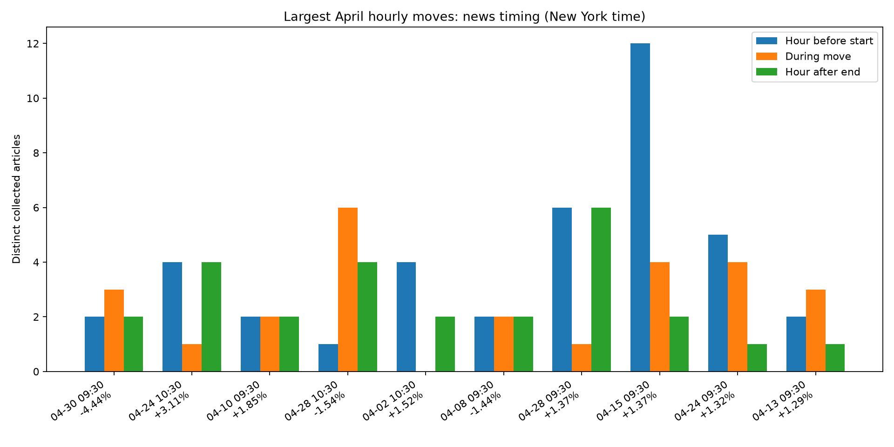

Ranked by absolute open-to-close return, full 60-minute regular-session bars only. Timing is descriptive: after publication does not establish that an article discusses this move. News includes retained direct and indirect coverage; exact copies deduplicated. Historical versions are uncertain. All times below are New York time.

| event_id | rank | start_ny | end_ny | start_utc | end_utc | open | close | return_pct | at_least_1pct | before_1h_count | before_1h_direct_count | before_1h_coverage_verified | during_count | during_direct_count | during_coverage_verified | after_1h_count | after_1h_direct_count | after_1h_coverage_verified | before_24h_count | before_24h_direct_count | before_24h_coverage_verified | after_24h_count | after_24h_direct_count | after_24h_coverage_verified |
|---|---|---|---|---|---|---|---|---|---|---|---|---|---|---|---|---|---|---|---|---|---|---|---|---|
| 2026-04-30T13:30:00+00:00 | 1 | 2026-04-30T09:30:00-04:00 | 2026-04-30T10:30:00-04:00 | 2026-04-30T13:30:00+00:00 | 2026-04-30T14:30:00+00:00 | 209.938995 | 200.615005 | -4.441285 | True | 2 | 2 | True | 3 | 2 | True | 2 | 1 | True | 29 | 20 | True | 39 | 32 | True |
| 2026-04-24T14:30:00+00:00 | 2 | 2026-04-24T10:30:00-04:00 | 2026-04-24T11:30:00-04:00 | 2026-04-24T14:30:00+00:00 | 2026-04-24T15:30:00+00:00 | 202.604996 | 208.915894 | 3.114878 | True | 4 | 4 | True | 1 | 0 | True | 4 | 3 | True | 32 | 28 | True | 32 | 27 | True |
| 2026-04-10T13:30:00+00:00 | 3 | 2026-04-10T09:30:00-04:00 | 2026-04-10T10:30:00-04:00 | 2026-04-10T13:30:00+00:00 | 2026-04-10T14:30:00+00:00 | 184.419998 | 187.824997 | 1.846328 | True | 2 | 2 | True | 2 | 2 | True | 2 | 2 | True | 39 | 31 | True | 16 | 14 | True |
| 2026-04-28T14:30:00+00:00 | 4 | 2026-04-28T10:30:00-04:00 | 2026-04-28T11:30:00-04:00 | 2026-04-28T14:30:00+00:00 | 2026-04-28T15:30:00+00:00 | 212.369995 | 209.100006 | -1.539760 | True | 1 | 1 | True | 6 | 6 | True | 4 | 4 | True | 44 | 42 | True | 33 | 28 | True |
| 2026-04-02T14:30:00+00:00 | 5 | 2026-04-02T10:30:00-04:00 | 2026-04-02T11:30:00-04:00 | 2026-04-02T14:30:00+00:00 | 2026-04-02T15:30:00+00:00 | 174.029999 | 176.679993 | 1.522722 | True | 4 | 4 | True | 0 | 0 | True | 2 | 2 | True | 31 | 29 | True | 25 | 18 | True |
| 2026-04-08T13:30:00+00:00 | 6 | 2026-04-08T09:30:00-04:00 | 2026-04-08T10:30:00-04:00 | 2026-04-08T13:30:00+00:00 | 2026-04-08T14:30:00+00:00 | 184.449997 | 181.800003 | -1.436700 | True | 2 | 2 | True | 2 | 2 | True | 2 | 2 | True | 32 | 24 | True | 51 | 42 | True |
| 2026-04-28T13:30:00+00:00 | 7 | 2026-04-28T09:30:00-04:00 | 2026-04-28T10:30:00-04:00 | 2026-04-28T13:30:00+00:00 | 2026-04-28T14:30:00+00:00 | 209.505005 | 212.375000 | 1.369893 | True | 6 | 6 | True | 1 | 1 | True | 6 | 6 | True | 46 | 44 | True | 39 | 34 | True |
| 2026-04-15T13:30:00+00:00 | 8 | 2026-04-15T09:30:00-04:00 | 2026-04-15T10:30:00-04:00 | 2026-04-15T13:30:00+00:00 | 2026-04-15T14:30:00+00:00 | 196.550003 | 199.240005 | 1.368610 | True | 12 | 9 | True | 4 | 4 | True | 2 | 2 | True | 79 | 60 | True | 53 | 45 | True |
| 2026-04-24T13:30:00+00:00 | 9 | 2026-04-24T09:30:00-04:00 | 2026-04-24T10:30:00-04:00 | 2026-04-24T13:30:00+00:00 | 2026-04-24T14:30:00+00:00 | 199.960007 | 202.604996 | 1.322759 | True | 5 | 4 | True | 4 | 4 | True | 1 | 0 | True | 34 | 27 | True | 32 | 26 | True |
| 2026-04-13T13:30:00+00:00 | 10 | 2026-04-13T09:30:00-04:00 | 2026-04-13T10:30:00-04:00 | 2026-04-13T13:30:00+00:00 | 2026-04-13T14:30:00+00:00 | 186.020004 | 188.419907 | 1.290131 | True | 2 | 2 | True | 3 | 3 | True | 1 | 1 | True | 21 | 17 | True | 41 | 34 | True |
| 2026-04-02T13:30:00+00:00 | 11 | 2026-04-02T09:30:00-04:00 | 2026-04-02T10:30:00-04:00 | 2026-04-02T13:30:00+00:00 | 2026-04-02T14:30:00+00:00 | 172.179993 | 174.044998 | 1.083172 | True | 1 | 1 | True | 4 | 4 | True | 0 | 0 | True | 29 | 27 | True | 24 | 17 | True |
| 2026-04-15T16:30:00+00:00 | 12 | 2026-04-15T12:30:00-04:00 | 2026-04-15T13:30:00-04:00 | 2026-04-15T16:30:00+00:00 | 2026-04-15T17:30:00+00:00 | 199.120193 | 196.970001 | -1.079846 | True | 1 | 1 | True | 4 | 3 | True | 6 | 3 | True | 69 | 52 | True | 58 | 50 | True |
| 2026-04-14T13:30:00+00:00 | 13 | 2026-04-14T09:30:00-04:00 | 2026-04-14T10:30:00-04:00 | 2026-04-14T13:30:00+00:00 | 2026-04-14T14:30:00+00:00 | 190.830002 | 192.860001 | 1.063773 | True | 4 | 4 | True | 6 | 5 | True | 4 | 4 | True | 38 | 32 | True | 77 | 59 | True |
| 2026-04-27T16:30:00+00:00 | 14 | 2026-04-27T12:30:00-04:00 | 2026-04-27T13:30:00-04:00 | 2026-04-27T16:30:00+00:00 | 2026-04-27T17:30:00+00:00 | 211.460007 | 213.610001 | 1.016738 | True | 6 | 6 | True | 0 | 0 | True | 3 | 3 | True | 43 | 36 | True | 46 | 44 | True |
Meta Platforms raised its annual capital expenditure forecast on Wednesday, doubling down on its decision to plow billions into artificial intelligence infrastructure even as it seeks cost savings...
This company serves some of the artificial intelligence industry's largest data center operators.
-Conference Call
Meta CEO Mark Zuckerberg: Co is rolling out more than one GW of our own custom silicon that co is developing with Broadcom - conf call...
Meta CEO Mark Zuckerberg: Co is rolling out a 'significant amount' of AMD chips to complement new Nvidia systems...
Shares of NVIDIA (NASDAQ:NVDA) are pulling back at midday Wednesday, with the stock down 2% to $209.40 after touching fresh all-time highs earlier this week. The bigger story, however, sits behind that intraday wobble: NVDA stock has rallied 20% this month. That kind of move would be a headline story most months. Instead, NVIDIA is ... Don’t Call It a Laggard: Why NVIDIA Is Up 20% in April
Shares of ON Semiconductor (NASDAQ:ON) are up 7% on Wednesday, trading near $99 as the analog chipmaker extends an extraordinary April rally. Through Tuesday’s close, ON stock had climbed 51% for the month, leaving the analog and power-chip name as a surprising leader amid the spring semiconductor surge. That move more than doubles the strong ... How ON Semiconductor More Than Doubled NVIDIA’s Gains in April
HILLSBORO, Ore., April 29, 2026--Lattice Semiconductor (NASDAQ: LSCC), the low power programmable leader, today announced it was named a 2026 AI Excellence Award winner by Business Intelligence Group. Lattice was recognized for its Edge AI solution developed in collaboration with NVIDIA, which delivers a flexible, full-stack platform for real-time data acquisition and processing. The solution combines the Lattice CertusPro™-NX Sensor to Ethernet Bridge Board with the NVIDIA Holoscan Sensor Bridg
Shares are up again on Wednesday, and potential improvement in the money-losing foundry business is helping. The stock started from a low point with investors unsure whether the new CEO, Lip-Bu Tan, could turn things around. Wccftech reported that Alphabet will use Intel’s EMIB technology for its next-generation TPU chip.
Replit CEO Amjad Masad has cautioned students against pursuing computer science degrees purely for high-paying tech jobs, arguing that artificial intelligence (AI) is reshaping what it means to build a software career. AI Reshapes Computer Science Career Expectations Speaking on the “20VC” podcast released on Saturday, Masad said students should avoid entering computer science if they are motivated only by financial gain or expectations of landing roles at companies like Google. Masad said, “If
Meta Platforms raised its annual capital spending forecast on Wednesday, signaling plans to pour billions more into artificial intelligence infrastructure even as it confronts potential losses from a...
NVIDIA Corporation (NASDAQ:NVDA) is one of the Harvard University Stock Portfolio: Top 10 Stock Picks. On April 25, 2026, Pony AI Inc. unveiled an upgraded Level 4 autonomous driving domain controller developed in collaboration with NVIDIA Corporation (NASDAQ:NVDA). The system was built on the NVIDIA DRIVE Hyperion platform and utilizes NVIDIA DRIVE AGX Thor and […]
Google says it will sell its TPUs for companies to use in their data centers.
Amazon.com on Wednesday reported cloud sales growth above Wall Street expectations, driven by strong enterprise spending as companies continue to devote tremendous resources to their artificial intelligence efforts. CEO Andy Jassy said the company was maintaining its target for $200 billion in AI investment this year, a relief to investors who have seen Big Tech relentlessly hike capital spending forecasts into the hundreds of billions in the rush to build out data-center capacity needed for AI workloads. Revenue at Amazon Web Services (AWS) jumped 28% to $37.6 billion in the first quarter, beating analysts' average estimate for a 25% increase, according to LSEG.
Despite robust results driven by cloud services and advertising, the group's shares slipped as markets questioned the scale of its capex in artificial intelligence and ce.
Exclusive-Prices of Nvidia's B300 server, key for AI tasks, nearly double to $1 million in China as US curbs tighten supply, sources say...
The leading chipmaker is highly dependent on a small group of customers.
https://www.reuters.com/world/china/prices-nvidias-b300-server-1-million-china-us-curbs-sources-say-2026-04-30/
SK hynix (KOSE:A000660) has started mass production of 192GB SOCAMM2 memory modules for AI servers. The new modules are designed for NVIDIA's latest platform and tuned for large language model workloads. The product targets memory capacity and efficiency constraints in high performance AI computing. SK hynix is a major memory supplier to global data center and AI customers, and the move into mass production of SOCAMM2 modules ties directly into rising demand for AI server hardware. By...
The GPU giant hit an all-time high this week and still has plenty of room to run.
NVIDIA Corporation (NASDAQ:NVDA) was among the stocks Jim Cramer covered on Mad Money as he discussed the wave of IPOs being the market’s possible biggest threat. Expressing bullishness on the company, Cramer said: One thing’s certain, though, seemingly out of nowhere, we’re seeing a tremendous level of interest in NVIDIA, which doesn’t even report this […]
Micron Technology, Inc. (NASDAQ:MU) has a five year forward EPS growth rate of approximately 130%, making it one of the best long-term tech stocks to buy according to hedge fund. Wall Street sees an upside of almost 10% as of April 27, with the stock soaring over 540% in one year. The highest analyst price […]
With stock buybacks of $51.76 billion in the 12 months through September 2025, NVIDIA Corporation (NASDAQ:NVDA) is among the 20 Stocks with the Biggest Share Buybacks. NVIDIA Corporation (NASDAQ:NVDA) benefited from ecosystem expansion on April 27 when LiveRamp Holdings, Inc. announced native support for NVIDIA AI infrastructure. The upgrade enables brands and partners to train and deploy […]
Nvidia didn't start this bull market. But it has come to define it.
TSMC (TSM) unveils a massive $56 billion investment plan to scale AI chip production amid persistent global supply shortages. Learn how the chipmaking giant is fighting off rising competition from Samsung to maintain its 2nm technology lead.
NVIDIA Corporation (NVDA) shares could be about to reverse. If they do, traders qill say the move higher was a 'false breakout'.
Tighter U.S. restrictions and strong AI demand drive sharp price surge.
Pony AI (NasdaqGS:PONY) announced a new generation autonomous driving domain controller developed with NVIDIA. The company expanded its Gen-7 Robotaxi platform with significant cost reductions and introduced a fully redundant L4 light-duty truck. Pony AI also unveiled a next generation AI world model for Virtual Driver training to support international commercialization across robotaxis and autonomous logistics. Pony AI operates in autonomous mobility, focusing on robotaxis and self driving...
For most of the AI boom, Nvidia (NVDA) has been the only name that mattered in data center hardware. That dynamic is shifting. AMD (AMD) stock has risen 55% year-to-date and remains up 3.5x over the last 12 months, powered by record data center revenues and an increasingly competitive GPU lineup.
(Bloomberg) -- The National Security Agency has been testing the capabilities of Anthropic PBC’s new artificial intelligence model to find cybersecurity vulnerabilities in popular software, including Microsoft Corp. products, according to a US official and another person familiar with the matter.Most Read from BloombergUS Seeks to Deploy Hypersonic Missile for the First Time Against IranNorth Korea Confirms Suicide Rule for Soldiers Ukraine CapturesJunior Bankers Sick of Grunt Work Build $2 Bill
The AI boom is still gaining steam.
Alphabet's Cloud growth outpaces Microsoft and Amazon as Gemini adoption and TPU sales drive massive AI monetization for Google.
Nvidia stock fell after quarterly earnings reports from Google and Amazon indicated rising competition in the AI chips business.
(Bloomberg) -- Meta Platforms Inc. is looking to sell between $20 billion and $25 billion of investment-grade bonds on Thursday, according to people with knowledge of the transaction, as the Facebook parent boosts spending on infrastructure for the artificial intelligence boom. Most Read from BloombergUS Seeks to Deploy Hypersonic Missile for the First Time Against IranNorth Korea Confirms Suicide Rule for Soldiers Ukraine CapturesJunior Bankers Sick of Grunt Work Build $2 Billion AI Tool to Do
Vertiv's growth has been supercharged by the growing demand for the artificial intelligence (AI)-focused data center solutions that it sells.
Caterpillar's 185% return crushed Nvidia's 80%. Q1 power-gen sales surged 41%. The data center power thesis just went mainstream.
Meta Platforms (NASDAQ:META) stock fell after JPMorgan downgraded it to Neutral from Overweight, cutting the price target to $725 from $825. The call came the morning after a blowout Q1 2026 earnings report, framing a sharp tension for investors: aggressive artificial intelligence capital expenditure (CapEx) versus visible returns. The rating cut diverges from peers. Cantor ... JPMorgan Downgrades Meta to Neutral: Are AI CapEx Concerns Finally Catching Up?
Semiconductor analyst Jay Goldberg of Seaport Research delivered a sober warning on Marketplace Morning Report’s segment Chipping away at Nvidia’s chip dominance: “There is the potential for this to entirely disrupt Nvidia, so I think it is a pretty significant risk.” The comment lands at a sensitive moment for NVIDIA (NASDAQ:NVDA) shareholders, who have ridden ... Wall Street Analyst Warns Hyperscaler Custom Chips Pose ‘Significant Risk’ to NVIDIA’s Dominance
It took quite a few months, but Nvidia (NASDAQ:NVDA) found its way back into the $5 trillion club. Until now, it’s the only member, and while there’s a risk that Jensen Huang’s GPU empire might get the boot from the club again as shares show signs of looking lower, I do think that it’s the ... Nvidia is Back in the $5 Trillion Club. It Might Not Take Long Before $9 Trillion
Yahoo Finance anchor Josh Lipton tracks Thursday's top moving stocks and biggest market stories. Nvidia (NVDA) stock is moving lower after Wednesday's round of Big Tech earnings. Hertz (HTZ) stock is surging after the company announced its partnership with Uber (UBER) on autonomous robotaxis.
The "Magnificent Seven" rose to fame with Apple on top. But Nvidia quickly became the leader of the group.
NVIDIA (NASDAQ:NVDA) is up 96.1% over the past year and just crossed a $5.26 trillion market cap on the same agentic AI thesis Evercore and Wedbush keep recycling around Microsoft (NASDAQ:MSFT)’s 50-day moving average. But here’s what you should actually be watching. The case against chasing NVIDIA at this level is straightforward. The stock trades ... Everyone’s Talking About NVIDIA. Smart Money Is Watching CrowdStrike Instead
Intel CEO Lip-Bu Tan became the latest technocrat to embrace quantum computing on Thursday as privately held PsiQuantum announced he would be joining the company’s board. It’s a big step for someone who has previously cited quantum computing as a strategic priority. Back in February, Tan described quantum as “another big area coming up is around the corner” in relation to how large amounts of data are processed.
Huawei's AI chip sales surge as Nvidia stalls in China - FT...
Nvidia has posted eight consecutive quarters of rising revenue, while Intel's figures have remained largely flat. Explore the financial trends shaping each chip company.
A trend has been gaining momentum at Amazon and Alphabet.
NVIDIA Corporation (NASDAQ:NVDA) is one of the 7 Best Data Center Hardware Stocks to Invest in. Reuters on April 22 cited Commerce Department Secretary Howard Lutnick reporting that NVIDIA Corporation (NASDAQ:NVDA) has not sold its H200 AI chips to Chinese enterprises. Lutnick stated, “We have not sold them chips as of yet,” attributing the delay […]
It can be tough to chase breakout moments, especially if a consolidating stock has already dealt out a fake-out in the past year. In any case, Nvidia (NASDAQ:NVDA) shares were quite quick to tumble below $200 per share after rejoining the $5 trillion club, once again, for just a few days. For Nvidia shareholders who ... Did Nvidia Just Deliver a Breakout Fake-Out? Why Dip‑Buyers Should Welcome a Dip
Intel CEO Lip-Bu Tan joins PsiQuantum board, praising its scalable, fault-tolerant quantum computing approach at $7 billion valuation
AI infrastructure stocks are well positioned to gain as hyperscaler data center spending tops $700B. See more on top AI stocks for the Mag 7 capex boom.
Alphabet is transitioning from AI beneficiary to AI infrastructure owner, notably through its TPU strategy. Find out why GOOGL stock is a buy.
https://www.bloomberg.com/news/articles/2026-05-01/nvidia-microsoft-aws-expanding-classified-military-ai-use
BlackRock says markets are rotating beyond AI into HALO sectors—utilities and infrastructure plays: benefit from AI + harder to disrupt.
AMD stock surged 74% in April; while Nvidia's 14% gain is still-impressive, AMD delivered more than 5 times the return of the AI chip king.
Nvidia stock was rising ahead of the open Friday, with the shares poised to open just above the closely-watched $200 level after tumbling 4.6% in the previous session. Nvidia stock suffered on Thursday after recent earnings from Amazon and Alphabet suggested the chipmaker could see rising competition from the tech giants. A decline of more than 4% on Thursday saw the stock plunge below the $200 price level which has been a matter of close attention from investors.
Of everything SanDisk (NASDAQ:SNDK) said in its fiscal Q3 report, the real story is a paradox. They posted an adjusted gross margin of 78.4%, a level that sits above the 75.1% gross margin Wall Street expects NVIDIA (NASDAQ:NVDA) to post when it reports its fiscal Q1. And yet the stock fell roughly 6% after hours. ... SanDisk’s Gross Margins Just Topped NVIDIA’s. Wall Street Sold Anyway.
Sen. Chris Coons demanded answers on H200 chips sales to China after Commerce Secretary Howard Lutnick and the Nvidia CEO Jensen Huang give differing answers.
NVIDIA shares up Friday, extending a rebound as risk appetite stayed firm across big‑cap tech, with Nasdaq up 1.16% and S&P 500 gaining 0.82%.
Nvidia Corporation stock outlook: why a $20T market cap by 2030 is possible. Click for this NVDA update and see why I have downgraded the stock to Hold.
Meta Platforms Inc. is ramping up its artificial intelligence (AI) investment plans as executives signal that the company's demand for computing power continues to exceed internal expectations. AI Infrastructure Push Accelerates Amid Rising Costs On Wednesday, during the company's first-quarter earnings call, CEO Mark Zuckerberg said the company is increasing its infrastructure capital expenditure forecast for the year, citing higher component costs, particularly in memory pricing. He added that
STORY: From big tech spending to Prada's boost from the Americas... This is the Week in Numbers.:: The Week in Numbers:: 63%63% was how much revenue at Google Cloud grew by in the first quarter, to $20 billion.Overall, Alphabet topped Wall Street estimates for quarterly revenue...as enterprise spending on AI delivered the best quarter of reported growth for its cloud unit yet.The Google parent company's total revenue rose 22% to $109.9 billion.:: $122 $122 was the price of Brent crude, jumping to a four-year high.It rose due to concerns the U.S.-Iran war could further escalate and disrupt global oil supply.Reuters energy editor Dmitry Zhdannikov:"The idea that somehow, somewhere, a consumer in the world will be insulated from the impact of this crisis is completely false. Everywhere in the world, in Asia, in Europe, even in the United States, which produces a lot of oil of its own, consumers will feel a massive impact." :: 6%6% was how much Meta shares fell by...That after it raised its annual capital spending forecast by $10 billion as it invests heavily in AI infrastructure.The Facebook-parent now projects capital expenditure between $125 billion and $145 billion this year.That's even as it grapples with possible losses from a global youth social media backlash.It also warned that legal and regulatory blowback in the EU and the U.S. could impact business.:: 14%14% was the unexpected fall in first-quarter operating profit at Volkswagen, to $2.9 billion.The group said it must overhaul its business...as tariffs, geopolitical shocks and weak car demand hit the auto industry.Around 50,000 jobs are already due to be cut across the group in Germany by 2030.:: $1.64 billion$1.64 billion was the first quarter group revenue at Prada, excluding Versace..It was driven by double-digit sales growth in the Americas, which offset weakness in Europe and the Middle East.Prada acquired Versace last year and is in the process of integrating and relaunching the brand.Versace contributed $167 million to quarterly revenues.
NVIDIA (NASDAQ:NVDA) and AMD (NASDAQ:AMD) closed the books on blockbuster quarters. NVIDIA posted $68.13 billion in Q4 FY2026 revenue on 73.21% growth. AMD followed with $10.27B and 34.1% YoY. Both ride the same AI wave, yet their businesses, margins, and customer mix tell very different stories. Blackwell Prints Cash. AMD Builds Breadth. NVIDIA’s Data Center ... Got 1,000 To Invest? Nvidia vs AMD- Only One Deserves Your Money
AMD heads into Q1 earnings with strong AI-driven growth, but rising competition and a stretched valuation cloud its near-term outlook.
NVIDIA (NASDAQ:NVDA) currently trades around $208.27, while Wall Street’s consensus price target sits at $268.61, leaving a gap of roughly 29% between where the stock currently trades and where analysts think the stock is going. NVIDIA designs the GPUs and networking fabric powering hyperscaler data centers, sovereign AI projects, and enterprise agent deployments. With a ... NVIDIA Trades 23% Below Analyst Price Targets Despite Rallying 20% This Month
NVIDIA and peers stand to gain as Big Tech boosts AI spending to $725B, fueling demand for chips, memory, storage and data center infrastructure.
Nvidia, Microsoft, Google, SpaceX, OpenAI, and Amazon will all serve as artificial-intelligence vendors for the Department of Defense.
For investors who want exposure to the artificial intelligence buildout without trying to pick the next NVIDIA, the iShares Future AI & Tech ETF (NASDAQ:ARTY) pitches a single-ticket solution: spread chips across the entire AI value chain, from semiconductors to data center infrastructure to software. The fund tracks the NYSE FactSet Global Robotics and Artificial ... ARTY Investors: Watch These 2 Signals Before the Next Quarter Ends
Nebius has risen over 70% this year so far.
SK Hynix reported surging quarterly profit on the back of a memory-chip shortage that could last for years. SK Hynix gave up initial gains to close up 0.2% in local trading while Micron was down 1.4%. SK Hynix executives told analysts that demand for high-bandwidth memory—a crucial component for artificial-intelligence chips from the likes of Nvidia —outstrips current supply capacity for the next three years.
It's a wow moment for semiconductor stocks.
Oklo taps Nvidia and Los Alamos National Laboratory to accelerate research and development around nuclear fuel.
Crunchbits, the high-performance computing provider known for GPU compute, bare metal, and virtualized infrastructure, today announced it has rebranded as Synteq HPC, effective immediately. Alongside the new identity, the company is launching two new datacenter locations in Dallas, Texas and Sofia, Bulgaria, announcing a more than 10x year-over-year expansion in compute and storage capacity and backend hardware. The company is also deploying NVIDIA's latest Blackwell-generation GPUs (the RTX PRO
The nuclear energy startup lands another big partnership after Meta Platforms. This time to advance U.S. nuclear infrastructure.
HBM demand tied to AI workloads may exceed supply for three years, supporting pricing and driving higher capital spending
The chipmaker is partnering with nuclear start-up Oklo to use AI to advance the next generation of nuclear power.
Shares of Micron Technology (NASDAQ:MU) are changing hands around $480 midday Thursday, off 2% on the session but still sitting near record territory. MU stock is up 68% year-to-date, making Micron one of the standout names in the AI infrastructure rally. The catalyst is structural. Every AI GPU from NVIDIA (NASDAQ:NVDA) and Advanced Micro Devices ... Micron Is Up 68% YTD as HBM Demand Explodes. Is the Memory Rally Sustainable?
We recently shared Jim Cramer Rubbished Circular AI Deals & Commented On These 18 Stocks. NVIDIA Corporation (NASDAQ:NVDA) is one of the stocks discussed by Jim Cramer. NVIDIA Corporation (NASDAQ:NVDA) is a firm that Jim Cramer discusses almost daily in his morning appearance. Its shares are up by 102% over the past year and by […]
Meta plans to cut a tenth of its workforce, looking for productivity gains from its remaining workers as it invests heavily in artificial intelligence.Meta is locked in a bitter rivalry with other tech behemoths racing to invest heavily in AI, aiming to ensure the technology generates profits in the not-so-distant future.
Nvidia CEO is a champion of physical AI. Investors better keep up or risk missing a multi-trillion-dollar market.
NVIDIA (NasdaqGS:NVDA) has formed an alliance with Oklo Inc. and Los Alamos National Laboratory to explore nuclear powered AI factories. The collaboration focuses on combining advanced nuclear reactors, AI models, and digital twins to support energy resilient data centers. The partners plan to use AI for fuel validation and materials research to support future nuclear powered compute infrastructure. NVIDIA, trading at around $202.5, has seen very large returns over the past 5 years and...
A reported order cancellation between Oracle (ORCL) and Super Micro Computer (SMCI) gave investors a new reason to question how durable some AI infrastructure relationships really are. Multiple market outlets, citing Bluefin Research, said Oracle canceled an order for 300 to 400 Nvidia GB300 NVL72 ...
Nvidia has deployed OpenAI's Codex across 10,000 employees, with CEO Jensen Huang calling AI agents a defining shift in the "age of AI."
It's difficult to muster much sympathy for investors who bought Nvidia stock in 2017 -- those who held on have since enjoyed gains of 3,400% or more. That hasn't deterred plaintiffs'...
Notably, DeepSeek looks to have turned primarily to China’s Huawei Technologies for the hardware behind its latest release. Huawei said in a WeChat post that its entire Ascend AI chip line now offers full-stack support for DeepSeek V4 models, although DeepSeek said it validated one of V4’s key efficiency techniques on both Nvidia graphics-processing units and Huawei’s chips. Nvidia has been hampered in China by tensions between Washington and Beijing.
Shares of server solutions provider Super Micro (NASDAQ:SMCI) fell 6.8% in the afternoon session after reports surfaced that the company lost a significant contract with Oracle, valued at between $1.1 billion and $1.4 billion. According to research from Bluefin, Oracle canceled an order for 300 to 400 Nvidia GB300 NVL72 server racks.
On Thursday, SK Hynix reported blowout first-quarter results, saying demand tied to artificial intelligence helped push quarterly revenue past KRW 50 trillion ($33.7 billion) for the first time. The memory maker also laid out plans for new DRAM and NAND products to dominate the memory market. SK Hynix Q1 Results Nvidia-supplier SK Hynix recorded KRW 52.58 trillion ($35.57 billion) in revenue, up 60% from the fourth quarter and 198% from the year-ago quarter. This is the first time the company ha
Amazon.com, Inc. outlook: $200B capex ramp, AWS demand pipeline, Trainium margin upside, and technical breakoutâplus valuation risks. Click for this AMZN update.
Notably, DeepSeek looks to have turned primarily to China’s Huawei Technologies for the hardware behind its latest release. Huawei said in a WeChat post that its entire Ascend AI chip line now offers full-stack support for DeepSeek V4 models, although DeepSeek said it validated one of V4’s key efficiency techniques on both Nvidia graphics-processing units and Huawei’s chips. Nvidia has been hampered in China by tensions between Washington and Beijing.
Increased CPU Demand Please click here for an enlarged chart of Intel Corp
Nvidia teams test next generation model
CNBC’s MacKenzie Sigalos reports on Google’s plan to invest up to $40 billion in Anthropic, deepening a partnership that gives the Claude maker more cloud and TPU capacity.
Nvidia stock is in a 25-weeks long consolidation with a 212.19 pivot as Big Tech earnings are set to unfold next week.
Shares of NVIDIA (NASDAQ:NVDA) closed Thursday at $199.64, leaving the AI chip leader up just 7% year to date. NVIDIA shares trade only slightly above $200 on Friday morning. That’s a striking lag given the rest of the semiconductor complex is ripping higher on the same AI thesis NVIDIA pioneered. The headline question matters. A ... Why Isn’t NVIDIA Stock at $300 While Other Semiconductor Stocks Rally?
NIO is betting that in-house chip development will sharpen its technological edge and improve profitability, Chief Executive William Li said on Friday, as the Chinese premium EV brand pushes to reduce reliance on suppliers such as Nvidia. Li said NIO developed its own silicon so its chips could better match the company's algorithms and sensor layout, particularly for AI functions such as advanced driver-assistance. He told Reuters in an interview that Nvidia's automotive chips have "very high gross margin," and that by making its own chips NIO could eventually lift its overall profit, despite higher upfront research-and-development costs.
Ironclad, the AI contracting company accelerating business with every contract, is proud to have been named to Fast Company's prestigious list of the World's Most Innovative Companies of 2026, joining the ranks of Google, Nvidia, Adidas, and Walmart. This year's list shines a spotlight on businesses that are shaping industry and culture through their innovations.
Oklo stock jumped for a second day in a row after the company on Thursday announced a partnership with chipmaker Nvidia and Los Alamos National Laboratory to work on next generation nuclear power.
CEO William Li says proprietary chips will better match NIO's algorithms and eventually lift overall profit margins
Amazon.com (NasdaqGS:AMZN) and Meta announced a large-scale partnership to deploy AWS Graviton custom silicon for Meta's workloads. The agreement expands the reach of Amazon's in house chip ecosystem across AI and cloud infrastructure. Separately, Amazon launched a nationwide GLP-1 weight loss drug program through One Medical and Amazon Pharmacy. The new healthcare offering integrates telehealth, prescriptions, and fulfillment for obesity treatments in the US. At a share price of $255.08,...
(Bloomberg) -- Google will invest $10 billion in Anthropic PBC, with another $30 billion potentially to follow, strengthening the relationship between two companies that are at once partners and rivals in the race to build artificial intelligence.Most Read from BloombergUS Reduces Marijuana Restrictions in Lift to Ailing IndustryMeta Tells Staff It Will Cut 10% of Jobs in Push for EfficiencyAnthropic’s Mythos Model Is Being Accessed by Unauthorized UsersInside Alex Cooper’s Unwell: Tears, Scream
Investing.com -- Nvidia (NASDAQ:NVDA) shares rose 5% Friday following strong earnings from Intel that lifted the broader semiconductor sector.
Nvidia stock rallied Friday, boosted by Intel's upbeat quarterly report and ahead of much-anticipated reports from AI giants.
Nvidia stock was on pace for a record closing high as shares of the artificial-intelligence giant briefly climbed above $209.
Internal rollout highlights deeper OpenAI partnership and rising enterprise AI adoption.
Still rising demand for AI semiconductor chips means good things for Intel -- and for Nvidia stock.
Nvidia's stock closed at its first record since October, as a rally in Intel pushed chipmakers higher.
Google's standout stock performance faces one big question: Can Alphabet monetize its huge artificial intelligence investments and build a profitable Gemini road map?
Stock Market Today: The Dow Jones index slips Friday while surging Intel stock aided the Nasdaq higher. AI stocks AMD and Arm jump.
Nvidia was on pace for a record-high close as the AI leader and most valuable company in the world crossed the $5 trillion valuation mark again.
Nvidia stock was surging Friday, with shares of the artificial-intelligence giant briefly climbing past $210.
In April 2026, Cadence Design Systems expanded its long-running collaboration with TSMC and deepened alliances with NVIDIA and Google to bring agentic AI, advanced IP, and certified design flows to leading-edge nodes such as N3, N2, A16, and A14 for AI and high-performance computing chips. These moves position Cadence’s AI agents and cloud-ready design stack at the center of next-generation semiconductor and digital-twin workflows across major ecosystem partners. Next, we will examine how...
Nvidia, AMD Lead Semiconductor Rally as AI Frenzy Accelerates
Yahoo Finance Anchor Josh Lipton tracks today's top moving stocks and biggest market stories in this Market Minute, including Bloomberg's reports that Alphabet (GOOG, GOOGL) plans to invest $40 billion into Anthropic (ANTH.PVT) and Nvidia's (NVDA) market cap crossing back above $5 trillion. Stay up to date on the latest market action, minute-by-minute, with Yahoo Finance's Market Minute.
NVIDIA Corporation (NASDAQ:NVDA) is one of the best NASDAQ growth stocks to buy and hold forever. On April 23, NVIDIA entered into a strategic agreement with Oklo Inc. and Los Alamos National Laboratory/LANL to integrate its AI and accelerated computing infrastructure with advanced nuclear technology. The collaboration focuses on developing nuclear-powered AI factories, combining NVIDIA’s […]
On April 24, 2026, investors weighed soaring AI chip demand, sector-wide rallies, and sky-high growth hopes around this market heavyweight.
Nvidia surged past a $5 trillion valuation as AI-driven demand and strong Intel earnings fueled a broad semiconductor rally.
Nvidia has reached a new milestone on Wall Street, with its market capitalization now exceeding 5 trillion dollars following a record close for its stock at $208.27 . This performance comes amid...
China's DeepSeek launched its V4 model powered by Huawei chips, signaling a shift away from Nvidia as it pushes AI self-reliance.
Marvell Technology, Inc. (NASDAQ:MRVL) was among Jim Cramer’s stock calls as he suggested that many red-hot stocks can keep making investors money. Discussing stocks that he missed out on, Cramer said: Next, data centers are filled with networking software and hardware. Remember, the data center is stuffed with a huge number of chips from NVIDIA, […]
Nvidia is down just 2% from its all-time high.
NVIDIA Corporation (NASDAQ:NVDA) is one of the 8 Best AI Stocks to Buy According to Billionaire Ken Griffin. On April 18, 2026, CNBC reported that NVIDIA Corporation (NASDAQ:NVDA)’s transition to artificial intelligence is straining its connection with gamers, as data center goods dominate performance and strategy. The data center revenue now makes up 91.5% of […]
Google Cloud used its Next conference to highlight what CEO Thomas Kurian described as a shift from experimentation to scaled deployment of artificial intelligence, telling attendees that “nearly 75% of Google Cloud customers now leverage our AI products to power their businesses.” Kurian said the f
Pony AI Inc. ("Pony.ai") (NASDAQ: PONY; HKEX: 2026) today announced its new generation autonomous driving domain controller, a high-performance compute system designed for both Pony.ai's L4 autonomous driving platform and a broader set of customer applications across autonomous mobility. Developed in collaboration with NVIDIA, the new controller is built on the NVIDIA DRIVE Hyperion platform and powered by NVIDIA DRIVE AGX Thor with NVIDIA NVLink, supporting Pony.ai's next phase of commercializa
Nvidia has followed the market’s trajectory closely, rising in tandem with the S&P 500 over the past six months. The stock has climbed by 7.1% to $199.50 per share while the index has gained 5%.
Alphabet is enjoying strong demand for the AI processors it designed in-house.
Neoclouds emerged as stopgaps to address the GPU shortage, but their economics are fragile, McKinsey has warned.
Pony AI Inc. shares edged higher after unveiling a next-gen Nvidia-powered L4 autonomous driving controller, signaling continued tech progress despite mixed momentum signals.
Google Cloud Next 2026 featured eighth-generation TPUs, the Gemini Enterprise Agent Platform, and Workspace Intelligence as Alphabet deploys up to $185 billion in 2026 capex.
Nvidia stock has soared since the AI boom began. Here's what investors need to know about the bull and bear cases for this AI kingpin.
Shares of leading designer of graphics chips Nvidia (NASDAQ:NVDA) jumped 5% in the afternoon session after strong earnings results from industry leader Intel and positive industry-wide forecasts boosted the broader semiconductor sector.
MRVL's AI XPU wins surge as hyperscaler demand drives a $75B pipeline and deeper NVIDIA ties, fueling growth in custom silicon and data centers.
Broadcom signed a long-term AI chip partnership with Google. Should you buy AVGO stock now?
Andy Jassy's annual shareholder letter reads something like a diss track to a wide range of competitors as he defends spending $200 billion in capex.
Amazon CEO Andy Jassy laid out plans to potentially sell AI chips and robots in his annual shareholder newsletter.
Nvidia has taken a stake in SiFive, a chip startup that designs processors using the RISC-V standard.
Amazon (AMZN) CEO Andy Jassy issued his annual shareholder letter, in which he reiterated the company's artificial intelligence (AI) spending and suggested the possibility of selling AI chips down the road. Yahoo Finance's Julie Hyman and Myles Udland take a closer look.
Shares rebound after months of flat trading, with analysts watching $185 and $200 levels for potential breakout signals.
Most Wall Street analysts cover Nvidia with spreadsheets built on earnings estimates and price-to-earnings ratios. UBS has a different tool entirely, and what it is saying about Nvidia is striking. UBS HOLT, the firm's proprietary cash flow-based valuation framework, says Nvidia's share price ...
Intel announced an expanded partnership with Google Thursday, adding to a string of recent deals.
Nvidia (NASDAQ:NVDA) stock might be grounded, but its GPUs are heading to space as the concept of orbital infrastructure and data centers shifts from a dream into reality. With Artemis II blasting off, a SpaceX IPO likely due for the start of summer, and a number of space startups gearing up for launches of their ... NVIDIA Chips are Going to Space. Could the Stock Be Next?
The chip business, which carries a $20 billion annual run rate, would reach $50 billion if sold on the open market, CEO Andy Jassy said
We just covered Billionaire Ken Fisher’s Latest Portfolio: 10 Best AI Stocks to Buy. Nvidia Corp (NASDAQ:NVDA) ranks #1 (see the 5 Best AI Stocks to Buy). Billionaire Ken Fisher’s Stake: $16.05 billion Tech companies continue to increase their AI spending plans, chip demand is rising and yet the market seems to have gone numb […]
Amazon.com CEO Andy Jassy dismissed fears of an artificial intelligence bubble and told investors they shouldn’t expect any slowdown in the firm’s AI investments—and the stock market seems to believe him. Jassy says he has the figures to back it all up. Amazon has projected capital expenditure of around $200 billion this year, largely on AI data centers.
One of Wall Street's most highly regarded quantitative models suggests Nvidia stock is wildly undervalued.
In his annual letter to shareholders, Amazon (AMZN) CEO Andy Jassy highlighted the tech giant's latest push into AI chip manufacturing and forecasts on its AWS business (Amazon Web Services). Yahoo Finance Tech Editor Dan Howley breaks down how Jassy's semiconductor vision may challenge Nvidia (NVDA) and Advanced Micro Devices (AMD).
UALink Consortium has ratified the UALink 2.0 Specification for open AI accelerator and chiplet interconnects. The update adds features such as In-Network Compute and standardized interfaces to support distributed AI systems. Advanced Micro Devices (NasdaqGS:AMD) is a key backer of the consortium, tying this standard directly to its AI hardware ambitions. For investors tracking Advanced Micro Devices at a share price of $231.82, this standards news sits alongside very strong recent returns,...
Nvidia stock erased earlier losses and closed higher on Thursday, but investors are worried that the two-week truce between the U.S. and Iran may not hold. Nvidia stock was the market’s go-to artificial intelligence pick for years, but it has traded between $165 and $195 for months as investors wonder how long so-called hyperscalers can maintain their aggressive capital spending. The cease-fire between the U.S. and Iran will likely have to hold for shares to break out of that range, given that the conflict has sapped the market’s appetite for risk assets.
Ciara Technologies, a division of the Hypertec Group and a Canadian global leader in sustainable AI infrastructure and advanced data-center technology, announced today that it has been officially designated as the first Canadian NVIDIA OEM Partner manufacturing systems in Canada.
Late Thursday, President Trump said Iran "better stop" Hormuz tolls. Nvidia chipmaker Taiwan Semiconductor, CPI inflation loom.
Intel rose after expanding its Google Cloud AI partnership, as investors look for signs the company can turn data center momentum into meaningful revenue in a market dominated by Nvidia.
Citron sets a $300 target on Amazon, predicting 28% upside fueled by a hidden $50B AI chip business that threatens Nvidia's dominance.
Oracle Corporation (NYSE:ORCL) is one of the 10 Best Growth Stocks to Buy for the Next Decade. Oracle Corporation (NYSE:ORCL) is one of the best growth stocks to buy for the next decade. On March 31, Oracle announced plans to strengthen its AI infrastructure for US government customers by integrating Nvidia B300 GPUs into Oracle […]
T-Mobile US Inc. (NASDAQ:TMUS) is one of the 10 Best Growth Stocks to Buy for the Next Decade. T-Mobile US Inc. (NASDAQ:TMUS) is one of the best growth stocks to buy for the next decade. On March 16, T-Mobile and Nvidia (NASDAQ:NVDA), in collaboration with Nokia, announced the integration of physical AI applications onto AI-RAN-ready […]
Super Micro Computer Inc. (NASDAQ:SMCI) is one of the 10 Best Growth Stocks to Buy for the Next Decade. Super Micro Computer Inc. (NASDAQ:SMCI) is one of the best growth stocks to buy for the next decade. On March 17, Supermicro introduced one of the industry’s first Context Memory/CMX storage servers, built on the Nvidia […]
TSMC, the world's largest contract chipmaker, reported on Friday first-quarter revenue of T$1.134 trillion ($35.71 billion), beating the market forecasts and up 35% on the year ago period on surging interest in artificial intelligence (AI) applications. An LSEG SmartEstimate, drawn from 20 analysts, had predicted first-quarter revenue of T$1.125 trillion. Taiwan Semiconductor Manufacturing Co (TSMC) is a major supplier to companies including Nvidia and Apple.
Microsoft's shift to agentic AI, custom silicon, and the M365 E7 suite positions it to absorb SaaS budget consolidation. Learn why MSFT stock is a strong buy.
The world's largest contract chipmaker has beaten forecasts again, adding to a run of hardware results that suggest the AI investment cycle is holding firm. The AI bubble shows no sign of popping. Taiwan Semiconductor Manufacturing Co (ADR) (NYSE:TSM) reported first-quarter revenue of $35.71...
CoreWeave to deliver dedicated AI infrastructure for Meta, highlighting increasing demand for large-scale computing resources.
STORY: :: TSMCThe world's largest contract chipmaker, TSMC, saw first-quarter revenue surge 35% thanks to the AI boom. Revenue from January-March hit $35.7 billion, beating market forecasts on surging interest in artificial intelligence applications.Friday's results are in line with TSMC's January guidance of up to to $35.8 billion on its last earnings call.The tech titan will report full first-quarter earnings on April 16, including an updated current quarter and full year outlook.The company has been a major beneficiary of advances in AI.That boom has more than offset a tapering-off in pandemic-led demand for chips used in consumer electronics like tablets.TSMC's customers include Nvidia and Apple.:: TSMCIts shares closed up more than 2% on Friday.
Amazon's custom AI chips business has doubled to a $20 billion annual run rate — and Jassy believes this is reminiscent of the playbook that dethroned Intel.
Nvidia stock was on course to snap a seven-day winning streak on Friday as investors shied away from tech stocks ahead of a key inflation report. Shares in the chip maker slid 0.6% to $182.88 ahead of the opening bell. Nvidia had risen for seven straight sessions through Thursday’s close, its longest run of consecutive daily gains since November 2023, according to Dow Jones Market Data.
The AI race is running into an unexpected wall—and it's not chips or capital. It's water, power, and local resistance. As Amazon.com, Inc., Microsoft Corporation, and Alphabet Inc. push to expand data center capacity, investors are starting to question whether the physical footprint of AI is becoming the real constraint. AI Growth Meets Real-World Limits According to a Reuters report, multiple hyperscalers have already scrapped or delayed billion-dollar data center projects in the U.S. amid comm
VISTA platform validated NVIDIA RTX Video Super Resolution's higher quality over standard upscaling through real-viewer testing with statistical confidence. The results to be demonstrated at NAB Show 2026 Herzliya, Israel, April 10, 2026 (GLOBE NEWSWIRE) -- Beamr Imaging Ltd. (NASDAQ: BMR), a leader in video optimization technology and solutions, today announced the launch of VISTA, a managed platform for subjective video quality testing at scale. Beamr will present a demonstration applying VIST
Ben Reitzes, head of technology research at Melius Research, joins CNBC's "Money Movers" to discuss his latest price hike on Intel, artificial intelligence, and more.
Dow Jones futures: Trump issued demands while Iran may boycott peace talks. Nvidia chipmaker Taiwan Semi's sales beat. CPI Inflation data looms.
While Nvidia once again fails to make the list, the best mutual funds keep scooping up shares this one stock.
Nvidia Corporation stock has traded flat despite surging revenue and EPS. Click here for this look at NVDA and its valuation.
The Investment Committee give you their top stocks to watch for the second half.
While tech titans like Nvidia, Tesla and Palantir get all the buzz, Benchmark Electronics is quietly dwarfing their gains.
Nvidia stock was on course to extend a seven-day winning streak on Friday as investors carried on buying tech stocks following a key inflation report. Shares in the chip maker climbed 0.9% to $185.53 in early trading. Nvidia had risen for seven straight sessions through Thursday’s close, its longest run of consecutive daily gains since November 2023, according to Dow Jones Market Data.
Stock Market Today: The Dow Jones index wavered Friday ahead of the CPI inflation report. Nvidia chipmaker TSMC jumped on strong sales.
Chips have fueled the AI gold rush, sending valuations of stocks like Nvidia (NASDAQ:NVDA) soaring as investors piled in. Six months later, though, the hardware leader sits flat while diversified players quietly compound gains. The next trillion-dollar shift isn’t going to be about raw compute power; rather, it will be the embedding of intelligence into ... Forget Nvidia: This Stock Will Be More Valuable in Less Than 1 Year
Computing is moving from storage toward generation, Nvidia (NASDAQ:NVDA) CEO Jensen Huang said. Computing systems are shifting from retrieval-based models to generative ones that produce outputs in real time, Huang said recently on the "Lex Fridman" podcast. "Warehouses don't make...
Tech giant Nvidia (NASDAQ:NVDA) and AMD (NASDAQ:AMD) both delivered powerful earnings beats in early 2026, yet are running fundamentally different races. The question for investors is which architecture, business mix, and growth trajectory wins this year. Blackwell Dominates. EPYC Earns Its Moment. Nvidia’s Q4 FY2026 revenue reached $68.13 billion, up 73.2% year-over-year, powered almost entirely ... Nvidia vs. AMD: Which Stock Will Outperform The Market In 2026
What can Nvidia do next to regain investor excitement?
Nvidia (NVDA) chips are suggested to have been brought into Shenzen-based computing firm Sharetronic
Agreement supports Claude model deployment using Nvidia chips across US data centers amid rising AI demand
Amazon (AMZN) got a strong lift after Andy Jassy used his annual shareholder letter to give investors something they had been asking for: harder numbers around AI demand and Amazon’s custom chip business. In the letter, Jassy said AWS’s AI revenue run rate is now above $15 billion and wrote that ...
Nvidia Winning Streak Hits Milestone. Investors Eye Hyperscaler Spending Limits
AI stocks are brilliant buys right now.
Earlier this month, CoreWeave announced an expanded long-term agreement to supply Meta with AI cloud capacity through December 2032 worth about US$21 billion, alongside a new multi-year cloud infrastructure deal with Anthropic and multi-billion-dollar bond and convertible note offerings to fund its data center build-out. Together, these contracts and financings deepen CoreWeave’s role as an AI infrastructure backbone for leading model developers while materially increasing its committed...
Nvidia's stock is seldom priced at this level.
Nvidia CEO Jensen Huang urges people to move to California despite high taxes, amid debate over a proposed billionaire tax and wealthy residents leaving the state.
This company can appeal to investors with different goals and styles.
After big stock market gains, Iran talks and upcoming earnings are in focus. Google, Amazon and Nvidia are in buy areas.
The S&P 500 is mixed after March inflation came in just below forecasts and uncertainty over a peaceful resolution to the Iran war. Tech stocks, though, were once again doing the heavy lifting. Right in the middle is Nvidia (NASDAQ:NVDA), which just logged its eighth consecutive session of gains through Friday’s close, with the stock ... Nvidia Just Posted Its Longest Winning Streak Since 2023. Is This Time for Real?
Microsoft said Monday it will no longer pay a share of its revenue to ChatGPT maker OpenAI, the latest move to untether a close partnership that helped unleash an artificial intelligence boom. OpenAI relied exclusively on Microsoft's investments in cloud computing services to build the technology that helped make ChatGPT a household name. Microsoft, in turn, relied on OpenAI's technology to build its own AI assistant Copilot.
While five of the Magnificent Seven companies are releasing earnings results this week — Alphabet (GOOG, GOOGL), Amazon (AMZN), Apple (AAPL), Meta Platforms (META), and Microsoft (MSFT) — the last one to report this earnings season is chipmaker Nvidia (NVDA) on May 20. BofA Securities senior semiconductor analyst Vivek Arya comes on Market Catalysts to share how much he believes Nvidia to be undervalued. Nvidia's market cap crossed back above $5 trillion last week.
(Bloomberg) -- Former Google DeepMind researcher David Silver has raised $1.1 billion for his new company, Ineffable Intelligence, in the latest example of an artificial intelligence startup securing enormous funds out of the gate.Most Read from BloombergThe Billion-Barrel Hormuz Oil Shock Is About to Crash DemandSergey Brin Confronted Gavin Newsom at a Treehouse Party — Then Launched a Political WarIran Offers Deal to US to Reopen Strait and Delay Nuclear Talks, Axios SaysGunman Detained, Trump
Nvidia's rally is powering major tech and semiconductor ETFs, but heavy concentration in one stock raises risks if its momentum slows.
Departure of Directors or Certain Officers; Election of Directors; Appointment of Certain Officers; Compensatory Arrangements of Certain Officers. (b) On April 24, 2026, Donald Robertson, Vice President, or VP,
Nvidia Corp: Nvidia Corp - Donald Robertson to retire as VP and CAO effective May 4, 2026 - SEC filing Nvidia Corp - Donald Robertson to remain as VP, finance until July 1, 2026 - SEC filing ...
Nvidia stock is approaching its all-time high above 212 and is a buy zone. Investors await earnings results from key customers.
The 1 Number: 2,957,362 H100-equivalent GPUs. That is what NVIDIA (NASDAQ:NVDA) shipped in a single quarter, and it explains why the AI compute leader still has a long runway. The Number NVIDIA shipped 2,957,362 H100-equivalent units in Q4 2025, according to Epoch AI, a figure that represents nearly two-thirds of all measured AI compute capacity ... The 1 Number That Shows Why Nvidia Is Not Done Growing
AMD (NASDAQ: AMD) and NVIDIA (NASDAQ: NVDA) both just delivered the kind of quarters that make me grin at my screen. AMD posted $10.27 billion in Q4 revenue, up 34.1% YoY, while NVIDIA stunned with $68.1 billion, up 73.2%. Different scales, different stories, and in my view, very different setups for the next 12 months. ... Why AMD Can Stay Hotter Longer Than NVIDIA
Intel stock was added to the Dow Jones Industrial Average in 1999. Replaced by Nvidia 25 years later, here's a look at the stock performance.
Nvidia (NASDAQ:NVDA) is everywhere right now because it just posted Q4 revenue of $68.13 billion, up 73.2% year-over-year, and Jensen Huang declared that “the agentic AI inflection point has arrived.” The real opportunity could be elsewhere. The trade everyone is piling into has a name: NVDA. A CPU shortage is quietly reshaping data center economics, ... Forget Nvidia: Sudden CPU Shortage Can Make AMD Explode Higher
Can two seemingly contradicting views be true at once? That the AI boom is alive and well, and that many chip stocks are overvalued?
High-yield offering follows strong investor demand for earlier financing tied to the same Nevada data center buildout
Shares of NVIDIA (NASDAQ:NVDA) are surging 4% this Monday afternoon, breaking out to a fresh all-time high as the broader semiconductor rally finally pulls the AI bellwether higher. NVDA stock trades near $216, clearing the prior 52-week peak of $212.17. The move caps a sharp run for chip stocks. NVIDIA shares are up 29% over ... NVIDIA Rises 4% to Record Highs on AI Buildout Momentum: Has the Catch-Up Trade Arrived?
With on earnings on deck for next week, AI networking powerhouse Arista stock shakes off a bad Nvidia headline and teases top of buy range.
A collaboration between Oklo, Nvidia, and the federal government sent the stock soaring.
Dow Jones Futures: The Nasdaq and S&P 500 set more record highs Monday. Micron, Sandisk, Nvidia and Alphabet were big winners.
U.S. stocks finished Monday on a mixed note, with the Dow Jones Industrial Average slipping 0.1% to 49,167.79.
Nvidia shares climbed to new highs Monday, amid a broader rally in AI-related stocks ahead of earnings from some of America's biggest tech companies.
The spotlight is on Nvidia Corp‘s next-gen Vera Rubin platform—but the real story isn't the GPU. It's the memory. And right now, that story runs straight through SK Hynix and a $13 billion bet that could decide how fast AI actually scales. HBM4 Bottleneck Is Real Vera Rubin, unveiled at GTC 2026, isn't just another chip upgrade—it's an architectural leap. But it comes with a catch: it requires next-gen HBM4 memory running at speeds north of 10Gb/s. That's not optional. Without it, the performanc
The AI chipmaker has rebounded from its recent correction, but is there additional upside ahead?
Chipmaker Nvidia (NVDA) has seen a strong rally recently, but not everyone on Wall Street believes it can keep going at the same pace. Indeed, JPMorgan (JPM) strategist Mislav Matejka said he still likes semiconductor stocks and remains positive on the group, but he also warned that the market may not behave the same way it did last year. While Nvidia surged about 120% over a six-month stretch in 2025 after a weak first quarter, Matejka believes that the conditions for another similar run are no
Himadri Speciality Chemical’s fair value has been kept steady at ₹470.0 per share, even as the underlying model assumptions for growth, margins, and discount rate have been fine tuned. Analysts are linking this unchanged price target to ongoing debate about how closely Himadri can sit alongside the supply chains feeding high performance computing and AI hardware, where current Street research is focused on memory and optical component names tied to Nvidia’s Vera Rubin platform. As you read...
Can Nvidia's stock price recovery last?
Jim Cramer says Nvidia's sellers have "disappeared," signaling easing bearish pressure and potential for continued upside amid the AI-driven chip rally.
Forget Nvidia. Strategist Steve Sosnick explains why "worker bee" chips like Micron and Texas Instruments are real winners of the AI boom.
Shares of leading designer of graphics chips Nvidia (NASDAQ:NVDA) jumped 3.6% in the afternoon session after sentiment improved following peer Qualcomm's landmark deal with OpenAI to integrate advanced models directly into mobile processors.
Big Tech has announced $740 billion in capex this year, but AI has yet to show evidence of widespread increased productivity.
Wall Street is optimistic about big tech companies and their data center construction plans, despite a memory shortage and the Iran war.
Nvidia, AMD and Broadcom slip as SOXX's near 50% rally since March cools, with pre-market weakness signaling profit-taking in chip stocks.
DUBROVNIK, Croatia, April 28, 2026--Pantheon Atlas LLC, a transatlantic-led investment group, today announced the development of Pantheon AI, a hyperscale AI data center and innovation campus in Topusko, Croatia, designed in accordance with NVIDIA GW-Scale AI factory standards, that will bring more than €50 billion in total investment to the central European nation and establish it as a leading regional hub for digital infrastructure.
-SEC Filing
Bloomberg’s report that OpenAI is missing internal targets sent OpenAI-linked names lower, and NVIDIA (NASDAQ:NVDA) caught the chop. I’ve watched NVDA since 2010, and headlines like this come and go. The thesis does not. OpenAI is one customer. Nvidia’s $62.3 billion in Q4 FY2026 Data Center revenue, up 75% year over year, is spread across ... OpenAI Hit a Speed Bump. Here’s Why Nvidia’s Long-Term Story Is Still Intact
CNBC's Oliver Renick reports the latest news out of the options market.
Leadership transition includes replacement by former Intel executive.
US stocks looked set for an uneven start on Tuesday, as oil prices surged and the Federal Reserve began its two-day policy meeting. Futures for the Nasdaq and S&P were down 1.3% and 0.7%, while Dow Jones futures were up 0.2%. This would more than reverse the modest gains made on Wall...
https://blogs.nvidia.com/blog/nemotron-3-nano-omni-multimodal-ai-agents/
Massive lease underscores long-term engineering expansion
Nvidia Corp (NASDAQ:NVDA, XETRA:NVD), Oracle Corp (NYSE:ORCL) and much of the semiconductor sector came under pressure after concerns over OpenAI’s growth cast doubt on demand for AI infrastructure. Shares in Nvidia fell 3.3%, Broadcom Inc (NASDAQ:AVGO) dropped 4.2%, AMD (NASDAQ:AMD) declined...
Cognex Corporation (NASDAQ: CGNX), the global technology leader in industrial machine vision, today announced the launch of the In-Sight® 6900 Vision Controller. The modular In-Sight Vision Controller gives manufacturers the freedom to configure cameras, optics, and lighting precisely for their inspection requirements, eliminating the compromises of fixed-configuration systems. Powered by NVIDIA Jetson technology, it delivers high-capacity AI processing at the edge, enabling the most demanding i
RI’s Distributed, Infrastructure-Light Architecture Signals a Break from Traditional AI Models as Microsoft (MSFT), NVIDIA (NVDA), Alphabet (GOOGL), Meta Platforms (META), Palantir (PLTR), OpenAI, Allbirds (BIRD), Anthropic, xAI, and Luma AI Continue Investing in Capital-Intensive Systems RI - Everything. Bothell, WA, April 28, 2026 (GLOBE NEWSWIRE) -- ReelTime Rentals, Inc. (OTCID:RLTR), doing business as ReelTime Media, today announced the release of its most advanced AI-driven image generatio
Shares of NVIDIA (NASDAQ:NVDA) are sliding roughly 3% in premarket trading Tuesday, pulling back from Monday’s record close. The AI chip leader finished yesterday at $216.61 after a 4% breakout that pushed it to a fresh all-time high. The pullback follows one of the most aggressive runs of 2026 for NVIDIA stock. Shares are up ... NVIDIA Slips After Hitting Record Highs: Is the Parabolic Move Cooling Off?
Nvidia is successfully diversifying its customer base as well as its data center business thanks to the solid networking sales. Click to read why NVDA is a Buy.
Stock Market Today: The Dow Jones index rose, but the Nasdaq sold off on the OpenAI report. Nvidia stock stumbled.
NVIDIA tops $5T market cap again as AI chip demand surges, lifting semiconductor ETFs like SMH, XLK, QQQ and SOXX into focus.
Nvidia vs. Salesforce reflects a broader AI-driven divide, with semiconductor ETFs outperforming software funds.
Large office deal signals continued AI and engineering investment in India
Nvidia Corp: Nvidia launches Nemotron 3 Nano Omni model, unifying Vision AI, audio AI and Language AI for up to 9x more efficient AI Agent Efficiency Nvidia - Nemotron 3 Nano Omni available from...
NVIDIA’s climb to a $5.2 trillion market cap in late April 2026 has the kind of fundamental scaffolding that makes today’s slight pullback look like noise rather than the start of a top. NVIDIA (NASDAQ:NVDA) slipped 2% in early trading on news of the OpenAI/Microsoft partnership restructuring, but the stock is still up 29% over ... 3 Reasons NVIDIA’s Rally Has Room to Run Even at All-Time Highs
Chip stocks tied to the buildout of data centers for artificial intelligence fell Tuesday on a negative report about OpenAI.
Nvidia also achieved an important new milestone.
NVIDIA's Blackwell platform fuels surging data center, gaming and margins, as new Rubin chips and strong earnings growth signal more upside ahead.
WEST PALM BEACH, Fla., April 28, 2026--Vultr, the world’s largest privately held cloud infrastructure company, today expands its ongoing collaboration with NVIDIA by deploying NVIDIA Nemotron 3 Nano Omni: a highly efficient open multimodal model delivering advanced reasoning and understanding with industry leading accuracy. Vultr now enables developers to deploy Nemotron 3 Nano Omni on dedicated NVIDIA GPU clusters as well as access directly through Vultr’s serverless inference service accelerat
I keep buying NVIDIA (NASDAQ:NVDA), and I am not going to pretend otherwise. Every paycheck, every rebalance, every dip that lasts more than a week, I add. The reason is simple. The company is selling the one product the entire technology industry is begging for, and the order book keeps getting longer. My conviction is ... Why I Keep Buying NVIDIA Stock—And Won’t Stop Soon
Investors are watching Amazon (NASDAQ: AMZN) ahead of Q1 2026 results due tomorrow after the close. With a $200 billion AI capex plan on the line and AWS posting its fastest growth in 13 quarters, this report could reset the AI infrastructure narrative. AWS Reaccelerated. Now It Has to Stick. Last quarter, AWS revenue grew ... Amazon’s AI Engine Is About to Explode Higher Tomorrow
Nvidia Corporation rides the early AI s-curve as labor shifts to compute, boosting margins. Click for this NVDA update and look ahead.
Dow Jones AI leader Caterpillar and Nvidia chipmaker TSMC are in buy zones in the ongoing stock market rally.
The AI start-up is at the center of a $1 trillion web of AI deals. When it sneezes, the sector gets a cold, and investors shiver.
Amazon announced what it called a “major expansion” of its partnership with ChatGPT maker OpenAI on Tuesday, a day after the artificial intelligence company said it was loosening its ties to longtime backer Microsoft. OpenAI CEO Sam Altman said the collaboration with Amazon's cloud computing division, Amazon Web Services, would involve co-developing a new platform for AI agents that can do computer-based work on people's behalf. Altman spoke via prerecorded video message to an Amazon event in San Francisco at the same time as he was appearing in federal court across San Francisco Bay in Oakland for a civil trial brought by rival OpenAI co-founder Elon Musk.
Reports that OpenAI (OPAI.PVT) missed its internal targets have been hitting the larger tech space on Tuesday. Yahoo Finance Senior Reporter Brooke DiPalma, Yahoo Finance Breaking Business News Reporter Jake Conley, and Yahoo Finance Markets and Data Editor Jared Blikre discuss the impact on Nvidia (NVDA), Intel (INTC), and other semiconductor stocks.
In the most recent trading session, Nvidia (NVDA) closed at $213.07, indicating a -1.63% shift from the previous trading day.
STORY: U.S. stocks ended lower on Tuesday, with the Dow ticking down marginally, the S&P 500 shedding about half a percent and the tech-heavy Nasdaq losing nine-tenths of a percent.AI-related fears spooked the market after the Wall Street Journal reported that OpenAI missed internal targets for weekly users and revenue, raising concerns about its ability to support its massive spending on data centers.:: OracleThose worries brought down shares of Oracle by 4%, as the company is reported to have signed one of the biggest cloud deals ever with OpenAI.Chip stocks also dropped, with Nvidia, AMD and Broadcom ending sharply lower. Nvidia-backed CoreWeave also slid nearly 6%.AI will remain in the spotlight, with five of the Magnificent Seven megacap firms reporting quarterly earnings this week.Brian Mulberry, chief market strategist at Zacks Investment Management, said he's expecting strong results."What I think we are more than likely to find out is that the demise of software has been vastly overstated. Again, the scalability of AI is limited to who owns the compute. And right now it's the really large hyperscalers that have all of the data. [FLASH] Coming through this week and all of the Mag 7 earnings, our expectation is that we're probably going to see that the capex numbers are pretty much the same, maybe even a little bit higher because of the lack of compute that's out there. And also the fact that they are still seeing contract sales go up because they can scale at an enterprise-wide system much more cost efficiently than you can just going directly to generative AI in this moment.":: ArchiveMeanwhile, the Federal Reserve convened for what is likely Jerome Powell's last monetary policy meeting as chair of the central bank.While the Fed is likely to leave interest rates unchanged on Wednesday, the accompanying statement and Powell's subsequent press conference will be parsed for views on inflation and the related spike in oil prices due to the U.S. war in Iran.
Nvidia and Alphabet both stand to profit from SpaceX's upcoming IPO.
LG Elec is working with Nvidia on humanoid robots - media...
https://en.yna.co.kr/view/AEN20260429005800320?input=tw
Check out the companies making headlines yesterday:
How you answer the question of whether the chipmaker is overvalued will depend on which metric you choose to focus on.
Alphabet Inc. (NASDAQ:GOOGL) is one of the 10 Best Edge Computing Stocks to Buy Right Now. On April 24, 2026, Bloomberg reported that Alphabet Inc. (NASDAQ:GOOGL) plans to invest up to $40 billion in Anthropic, with both companies confirming the expansion of their partnership as competition intensifies in artificial intelligence. Anthropic said the agreement builds […]
Demand for Huawei's Ascend 950 AI chips has surged following the release of DeepSeek's V4 artificial intelligence model that runs on the Shenzhen-based tech firm's chips, with major Chinese internet firms rushing to secure orders, three people familiar with the matter said. China's biggest internet firms including ByteDance, Tencent and Alibaba are reaching out to Huawei about new chip orders, said the sources, who are familiar with the procurement discussions. While the 950PR significantly outperforms Nvidia's H20 chip - the most powerful chip Nvidia was permitted to sell in China until Beijing blocked its import last year - it still trails the American firm's H200, a more advanced processor that has been caught up in regulatory limbo.
Jensen Huang went from washing dishes at Denny's to building the world’s most valuable company—now he says the field he studied in college will be critical to the AI revolution.
Nvidia CEO Jensen Huang says engineering careers will thrive in the AI era as artificial intelligence drives a new industrial revolution and job shifts.
Shares of leading designer of graphics chips Nvidia (NASDAQ:NVDA) fell 2.1% in the afternoon session after a broad selloff swept through the semiconductor industry, sparked by concerns over the future of artificial intelligence spending and rising geopolitical risks.
South Korean tech company LG Electronics said on Wednesday that it and Nvidia have been discussing cooperation in robotics, AI data centres and mobility. The comments came after Madison Huang, a senior director for physical AI platforms at Nvidia, and the daughter of its CEO, visited LG Electronics and other South Korean companies, according to reports in Korean media. (Reporting by Hyunjoo Jin; Editing by Andrew Heavens)
Corning (NYSE:GLW) reports Q1 2026 sales that are 18% higher year over year, supported by Optical Communications and Solar. The company signs multiple large, long term agreements with hyperscale customers, including Meta, tied to Gen AI infrastructure build outs. Corning extends and upgrades its Springboard growth plan through 2030 to reflect demand from Gen AI and solar markets. For investors watching how Gen AI and clean energy trends translate into real orders, Corning sits in the middle...
Advanced Micro Devices, Inc. is the #2 AI infrastructure play after Nvidia. See Q4 2025 growth, data center momentum, ROCm and risksâclick to see if AMD is a buy.
Taiwan’s ASE Technology Holding, the world’s largest chip packaging and testing provider, said on Wednesday it expected revenue from its leading‑edge advanced packaging business to rise 10% to more than $3.5 billion in 2026, as the company sees strong customer demand for AI chips. • The holding company's subsidiary Siliconware Precision Industries (SPIL) is a major packaging supplier for Nvidia's AI chips. • ASE's shares have risen 95% so far this year, far outperforming a 36% rise in the broader market.
Nvidia stock remained largely flat as investors weighed its new AI model launch and potential partnerships with memory chipmakers.
All three of the chip companies fell Tuesday after The Wall Street Journal reported that ChatGPT-developer OpenAI had missed internal revenue and user targets, sparking worries about AI investment. However, OpenAI told Barron’s the business was “firing on all cylinders.”
NVDA scores 9/10 overall with strong growth (64.77% EPS growth), perfect profitability (10/10), and a reasonable valuation (P/E 25.30 forward). It's a prime "Growth at a Reasonable Price" candidate for disciplined GARP investors.
INDIANAPOLIS, IN / ACCESS Newswire / April 29, 2026 / Arrive AI (NASDAQ:ARAI), an autonomous delivery infrastructure company, announced it is accelerating artificial intelligence (AI) and robotics development using NVIDIA Isaac Sim and high-performance ...
STORY: From major partner shifts to new medicine, this is AI Weekly:: AI WeeklyOpenAI is now offering its latest AI models and coding agent Codex on Amazon's cloud services platform.That’s after the ChatGPT creator loosened its ties with long-time backer Microsoft. It’s a major partner shift that came after the two firms renegotiated the exclusivity Microsoft had in selling OpenAI's models on its cloud platform.Amazon and OpenAI have been deepening ties for several months, with investments and spending commitments going both ways. ______China moved to block Meta’s $2 billion acquisition of AI startup Manus on Monday. Beijing has tightened scrutiny of U.S. investment in domestic startups which are developing frontier technologies. That’s as Washington tries to limit Chinese tech firms' access to advanced U.S. chips.Manus relocated to Singapore to bypass Beijing’s restrictions…And it’s unclear how and if an unwinding of the acquisition could now occur. _____Johnson & Johnson said it’s using AI to halve the time it takes to generate drug development leads. The pharma giant is using the new technology to screen the "potential universe" for promising chemical compounds or biologics.Although, an executive said, it’s not yet possible to discover new products outright and bringing them to market using AI.J&J said that using this tech, it’s already accelerated the development process for two compounds - one in oncology and another in immunology.European Parliament lawmakers failed to reach a deal on watered-down landmark AI rules.EU countries spent 12 hours negotiating and on Tuesday and will resume talks next month. The changes to 2024’s AI Act aims to simplify regulations to help European businesses catch up with U.S. and Asian rivals.Europe's AI rules, considered to be the strictest in the world, came amid concerns about the impact of the technology on children, workers, companies and cybersecurity.While proposed changes to the AI Act have drawn criticism from privacy activists and civil rights groups. DeepSeek unveiled its new AI model tailored for Huawei chips.And now big Chinese tech firms are rushing to secure orders of these Ascend 950 AI chips. DeepSeek said its pro version of the V4 artificial intelligence model outperforms other open-source models, trailing only behind Google's closed-source Gemini-Pro-3.1.Sources said firms including ByteDance, Tencent and Alibaba are reaching out to Huawei about new chip orders.
Polen Capital, an investment management company, released its “Polen Focus Growth Strategy” first-quarter 2026 investor letter. A copy of the letter can be downloaded here. The first quarter of 2026 was highly volatile for US equities, driven by AI disruption concerns and the US-Israel conflict in Iran and the Middle East. In this backdrop, the Polen […]
LIVINGSTON, N.J., April 01, 2026--CoreWeave, Inc. (Nasdaq: CRWV), The Essential Cloud for AI™, today announced landmark results in the MLPerf® Inference v6.0 benchmark suite. Participating in the Datacenter Closed division, CoreWeave leveraged NVIDIA’s newest AI infrastructure, the NVIDIA GB200 NVL72 and NVIDIA GB300 NVL72.
NVIDIA Corporation (NASDAQ:NVDA) is one of the 10 Best Stocks to Buy According to Billionaire Paul Tudor Jones. NVIDIA Corporation (NASDAQ:NVDA) has featured in the 13F portfolio of Tudor Investment Corp for more than a decade and a half. For a long period, this holding comprised over a million shares. Latest filings, submitted at the […]
Tech giant Nvidia (NASDAQ:NVDA) and Broadcom (NASDAQ:AVGO) both just reported blockbuster AI-driven quarters. Nvidia posted Q4 revenue of $68.13 billion, up 73.2% year-over-year, while Broadcom delivered Q1 FY2026 revenue of $19.31 billion, up 29.5% year-over-year. Both are winning the AI infrastructure buildout, but in very different ways. GPUs Dominate One. Custom Silicon Drives the Other. ... Nvidia vs Broadcom: Which AI Stock Will Make You More Money
Nvidia is a highly rated stock that had a massive bounce on Tuesday, rising 5.59% and closing near the day's high. Investors who think Nvidia stock will continue to rally and don't want to risk significant capital can use long call options rather than buying stock in the artificial intelligence industry behemoth outright. This can be a good way to protect precious capital in these volatile markets.
NVIDIA Corporation (NASDAQ:NVDA) is included in Mad Money’s latest recap as Jim Cramer outlined his strategy for market sell-offs. Cramer explained why the stock is going down, as he commented: … Most painful, we have stocks that go down two and then up one. Take a look at NVIDIA. This is a stock that’s already […]
Lattice Semiconductor stock is climbing in a consolidation. The chipmaker's quarterly profit growth accelerated to triple-digits.
NVIDIA Corporation (NASDAQ:NVDA) earns a spot on our list of 8 Best AI Infrastructure Stocks to Invest in. As of March 30, 2026, over 90% of covering analysts maintained a “Buy” rating for NVIDIA Corporation (NASDAQ:NVDA). The consensus price target of $265.00 implies a 58.19% upside potential. On March 23, 2026, following NVIDIA Corporation (NASDAQ:NVDA)’s […]
Oppenheimer sees Monolithic Power benefiting from AI demand, with long-cycle opportunities to translate into sustained upside.
NVIDIA Corporation (NASDAQ:NVDA) is one of the 15 Best Stocks to Buy According to Billionaire Ray Dalio. NVIDIA Corporation (NASDAQ:NVDA) is one of the most enduring positions in the 13F portfolio of Bridgewater Associates over the past decade and a half. Since 2011, the fund has owned a stake in the AI infrastructure company. In […]
Nvidia has agreed to invest $2b directly into Marvell Technology and expand their partnership on advanced AI infrastructure and silicon photonics. The agreement includes work on custom AI hardware, networking solutions, and integrating Marvell into Nvidia's NVLink Fusion platform. This development positions Marvell as a key player in data center, telecom, and future 5G/6G infrastructure linked to Nvidia's AI ecosystem. For investors watching NasdaqGS:MRVL, this partnership arrives with the...
Marvell Technology (NASDAQ:MRVL) shares are up 7% in Wednesday trading, climbing above $106 after opening at $99.05. The catalyst is unmistakable: NVIDIA‘s (NASDAQ:NVDA) $2 billion strategic investment in Marvell, integrating the company into the NVIDIA AI factory and AI-RAN ecosystem through NVLink Fusion. The move puts Marvell squarely at the center of the AI infrastructure ... Marvell Technology Rises 7%: The NVIDIA NVLink Deal Is Turning This Chip Stock Into an AI Powerhouse
NVIDIA Corporation (NASDAQ:NVDA) is one of the Motley Fool’s high-growth stock picks. On March 27, Wolfe Research reiterated an Outperform rating on NVIDIA Corporation (NASDAQ:NVDA) and a $275 price target. The bullish stance affirms the research firm’s confidence in the company’s prospects, driven by the introduction of Rubin Ultra for agentic AI capabilities. During GTC […]
Find insight on Nvidia’s deal with Marvell Technology, SpaceX’s IPO, nCino and more in the latest Market Talks covering technology, media and telecom.
NVIDIA Corporation (NASDAQ:NVDA) features on the D. E. Shaw Stock Portfolio: Top 10 Stocks to Buy. D. E. Shaw is among a handful of elite money managers who have been bullish on NVIDIA Corporation (NASDAQ:NVDA) since before it was an AI powerhouse. The fund has owned a stake in the company since late 2010. Back […]
Chinese GPU and AI chipmakers captured nearly 41% of China's AI accelerator server market in 2025. It represents one of the sharpest erosions of Nvidia's (NVDA) position in a key overseas market on record. The data come from an IDC report reviewed by Reuters. Total AI accelerator card shipments in ...
NVIDIA (NasdaqGS:NVDA) has certified VergeIO for RTX vWS, aiming to simplify deployment of GPU-accelerated cloud desktops for enterprises. The VergeIO certification targets professional virtual graphics use cases, including engineering and design workloads that rely on high-performance visualization. NVIDIA has also expanded its AI Factory partnerships, including work with SLB in the energy sector and FPT's AI Factory cloud in Southeast Asia built on HGX B300 systems. These developments...
Advanced Micro Devices (NasdaqGS:AMD) and Samsung have expanded their collaboration in AI memory and computing. The agreement secures HBM4 supply for AMD's next generation Instinct accelerators and advanced DRAM for upcoming EPYC CPUs. Both companies are also exploring adding Samsung as a foundry partner for future AMD products. For investors watching NasdaqGS:AMD, this move links a key AI and data center roadmap directly to Samsung's HBM4 and DDR5 technologies. The shares recently closed...
Nvidia, as the biggest chip designer, is a central player in the AI story.
Nvidia transformed itself from a company known first for making the hardware for processing graphics in gaming to accelerating processing models for artificial intelligence. Nvidia continues to focus on growing its artificial intelligence business, and part of that growth requires hiring top ...
Premarket movers: CF Industries, Exxon Mobil, Nvidia, Micron Technology
Arm (ARM) is set to dominate 90% of the AI server market by 2029 as Google, Amazon, and Meta ditch Intel, AMD in favor of custom silicon.
ServiceNow, Inc. (NYSE:NOW) is one of the 10 Top Stocks Fund Managers Are Loading Up On in 2026. On March 16, 2026, ServiceNow, Inc. (NYSE:NOW) announced an expanded partnership with NVIDIA at GTC 2026 to govern the Autonomous Workforce. The collaboration combines the company’s AI Control Tower with the NVIDIA Enterprise AI Factory to operationalize […]
The two chip giants battle for positioning as the AI supercycle shifts from model training to inference.
A look at the most-searched tickers on Benzinga Pro for the month of March shows several newcomers and momentum stocks that saw strong interest.
NVIDIA stock gained 8% in three days, but a record oil-stock inverse correlation and weakening internals threaten a reversal.
SAN JOSE, Calif. & NEW YORK, April 02, 2026--Aviz Networks, a leader in open, AI-optimized networking software, and VAST Data, the AI Operating System company, today announced an integrated solution designed to simplify how enterprises deploy storage networking as part of NVIDIA AI factory environments.
Partnership centers on speeding up how AI systems communicate and scale.
Marvell Technology deepens NVIDIA tie-up, boosting its role in AI infrastructure and unlocking new growth avenues in high-speed connectivity and custom silicon demand.
Micron Technology, Inc. (NASDAQ:MU) is one of the Stocks That Can Make You Richer in 2026. On March 16, Micron Technology, Inc. (NASDAQ:MU) at the GTC 2026 announced ramping up production of advanced products for NVIDIA’s next-gen Vera Rubin systems. The company noted that they began volume shipments of HBM4 36GB 12H in Q1 2026, […]
Nvidia shares are up Thursday, showing strength as chip and AI names drew buying. While the Nasdaq and S&P 500 slipped, Nvidia outperformed.
Don’t look now, but Nvidia (NASDAQ:NVDA) made yet another remarkable AI investment, with a $2 billion stake in Marvell Technology (NASDAQ:MRVL). Undoubtedly, investing in increments of $2 billion seems to be the way to go for Jensen Huang and Nvidia of late. And while the latest deal is remarkable, odds are that it flew under ... NVIDIA Just Made Another Big Bet—Are You Still Paying Attention?
Big Tech stocks like NVDA and AAPL are outperforming defense plays like ITA ETF during the Iran war, signaling an unusual shift in investor behavior.
“I’ve said over and over Jassy you got to be all in in Nvidia. And he said no.” That’s Jim Cramer on Mad Money, frustrated that Amazon (NASDAQ:AMZN) CEO Andy Jassy keeps betting on custom silicon instead of doubling down on Nvidia (NASDAQ:NVDA). I’ve been watching pretty much every report on this debate for a ... Is Amazon CEO Jassy wrong about his custom chips bet?
Bullish Taiwan Semiconductor Manufacturing Company Limited outlook ahead of Q1 2026: click for TSM guidance, margins, Nvidia Blackwell/Vera Rubin demand, and more.
Nvidia stock and AMD recovered from early morning losses Thursday. The Iran war has raised supply-chain concerns for the chip sector.
Micron, Broadcom and NVIDIA stand out as top profitable picks as high net income and growth screens narrow thousands of stocks to 25.
AMAT and LRCX surge as AI chip demand lifts semiconductor equipment makers, positioning them to mirror NVDA's long-term growth despite market volatility.
Comcast Corporation (NASDAQ:CMCSA) earns a place on our list of the 8 Most Undervalued Value Stocks to Buy Right Now. Analysts’ sentiment on Comcast Corporation (NASDAQ:CMCSA) remains mixed as of March 30, 2026, despite the consensus price estimate of $32.50, implying a 13.50% increase. To enable real-time AI applications closer to end users across its […]
Nebius Group recently announced plans to build a new AI “factory” data center campus in Lappeenranta, Finland, with up to 310 MW of capacity, adding to its expanded Mäntsälä site and broader multi‑gigawatt global build‑out. The project, backed by a broader ecosystem that includes large long-term contracts with Microsoft and Meta and a focus on low‑carbon, heat‑recycling infrastructure, underlines how AI compute demand is reshaping regional economies, energy use, and labor markets in Finland...
Nvidia (NVDA) is investing $2 billion in Marvell Technology (MRVL) to boost its AI ecosystem through NVLink Fusion technology. This partnership links Marvell to Nvidia’s AI factories and AI-RAN networks for custom AI infrastructure. Marvell provides custom XPUs and compatible networking, while Nvidia supplies Vera CPUs, ConnectX NICs, BlueField DPUs, NVLink interconnects, and Spectrum-X switches. The companies will collaborate on silicon photonics and transform telecom networks into AI systems f
How high can Nvidia's revenue climb over the next few years?
Nvidia, ticker NasdaqGS:NVDA, is investing US$2b in Marvell Technology to deepen collaboration on AI infrastructure. The deal links Marvell’s custom XPUs and networking with Nvidia’s NVLink Fusion AI factory and AI-RAN platforms. Marvell’s networking, silicon photonics, and telecom hardware will connect directly into Nvidia’s broader compute stack. Nvidia has built its reputation around GPUs for AI and accelerated computing, and now the company is tying that core business more tightly to...
In late March 2026, CIQ announced a collaboration with Advanced Micro Devices to deliver AMD-optimized Rocky Linux and integrated software stacks for AI and high‑performance computing workloads running on AMD data center solutions, including Instinct GPUs and the ROCm platform. By pairing this software foundation with AMD’s CPU‑first approach for power‑constrained AI inference and its broader accelerator roadmap, the company is positioning its chips as the core of open, power‑efficient...
Microsoft said it plans to invest $10 billion in Japan between 2026 and 2029 to build AI infrastructure.
The market has shrugged off Nvidia's $1 trillion projection.
Microsoft on Friday said it will invest 1.6 trillion yen ($10 billion) in Japan between 2026 and 2029 to expand artificial intelligence infrastructure and strengthen cybersecurity cooperation with the government. The investment includes the training of 1 million engineers and developers by 2030, Microsoft said, which was unveiled during a visit to Tokyo by Vice Chair and President Brad Smith. In a statement, the company said the plan aligns with Prime Minister Sanae Takaichi's goal to boost growth through advanced, strategic technologies while safeguarding national security.
Coupang and Nvidia announced a partnership at the NVIDIA AI Conference to build an AI factory for e-commerce logistics. The AI factory will combine Nvidia’s DGX SuperPOD with Coupang Intelligent Cloud to speed up AI model development. The project is aimed at supporting Coupang’s Rocket Delivery service and broader global logistics network. For investors watching Coupang (NYSE:CPNG), this tech collaboration comes as the stock trades at $18.95, with a 3.2% return over the past week and a...
Microsoft said Friday it will invest $10 billion in Japan over the next four years to build artificial intelligence data centres and related infrastructure.On Tuesday, the company announced plans to invest more than $1 billion in cloud and AI data centre infrastructure and operations in Thailand over the next two years. nf/kaf/abs
Microsoft plans to invest $10 billion in Japan over the next four years to develop artificial-intelligence infrastructure with partners and strengthen cybersecurity initiatives. The U.S. technology giant said Friday that the investment plan is aimed at helping advance Prime Minister Sanae Takaichi’s goal of improving the nation’s economic security and promoting growth investments in advanced technologies. Microsoft said it would team up with internet services providers SoftBank and Sakura Internet to consider jointly developing AI services to support the development of domestic large language models and other applications.
Nvidia has built an AI empire, and that's powered tremendous earnings growth.
NVIDIA Corporation (NASDAQ:NVDA) is among the stocks in focus as Jim Cramer highlighted a market yearning for the status quo ante. Cramer highlighted the company’s recent deal with Marvell. The Mad Money host commented: Today, the action in the growth stocks say, well, this is what things were going to look like. I want to […]
There might be plenty of upside left for the stock.
Strong demand is pushing costs higher instead of bringing them down.
CNBC’s Jim Cramer expressed skepticism over the latest market bounce, noting that the narrow rally is being heavily propped up by data center memory stocks capitalizing on an artificial intelligence storage shortage. The AI Storage ‘Gold Mine’ Despite the major indices posting modest gains, Cramer warned investors that the advance lacks broad, dependable leadership. Instead, the market’s heavy lifting is being done by the “big four” of memory and storage: Micron Technology Inc., Western Digital
Erste Group upgraded AMD (AMD) to Buy from Hold. For Q1, AMD anticipates 32% year over year revenue growth driven by rising demand for high-performance CPUs and GPUs in data centers, the analyst tells investors in a research note. Operating margins remain strong relative to the industry, supported by an attractive product portfolio, with the upcoming second half launch of the AMD Instinct MI450 series expected to compete with Nvidia’s (NVDA) Ruby architecture and drive strong demand due to highe
Nvidia Raised to $220 at DBS. Hopper and Blackwell Demand Seen Exceeding Supply Well Into FY2026
Nvidia stock heads lower Tuesday after four days of gains. Shares remain below their key moving averages.
Nvidia's integration of Groq 3 LPX and Vera Rubin architecture delivers a 35x tokens-per-watt leap. Click here to find out why NVDA stock is a Strong Buy.
IREN is betting on 150,000 GPUs to reach $3.7B AI cloud ARR by 2026, with $2.3B already under contract and more customer talks underway.
TCW funds, an investment management company, released its “TCW Relative Value Large Cap Fund” fourth-quarter 2025 investor letter. A copy of the letter can be downloaded here. Equities ended the year on a positive note, with the S&P 500 Total Return (USD) increasing by 2.65% and achieving a remarkable 17.9% in 2025. The AI sector continued […]
Advanced chip packaging is one of Intel’s (INTC) quietly fast-growing businesses. Over the past six months, Intel has been signaling that its advanced packaging business, which operates within the Foundry chip-making arm of the company, is having a growth spurt, Wired reports. The company’s efforts around this have it going head-to-head with TSMC (TSM), which far surpasses Intel’s production in terms of scale. But Intel thinks this effort can help it grab a bigger slice of the AI pie. Multiple s
NVIDIA Corporation (NASDAQ:NVDA) is one of the 8 Best American Stocks to Buy for the Next 5 Years. On March 31, NVIDIA Corporation (NASDAQ:NVDA) and Marvell Technology, Inc. (NASDAQ: MRVL) announced a strategic partnership in which NVDA is investing $2 billion in Marvell. The collaboration focuses on NVDA’s NVLink Fusion, a rack-scale AI infrastructure that […]
Hours after the bell Monday, Anthropic announced a multi-gigawatt TPU deal and revealed its run-rate revenue had hit $30 billion from $9 billion.
Nvidia Corporation is rated Strong Buy, trades at around $177, which implies a forward P/E of 21x and PEG of 0.56. Learn more about NVDA stock here.
Broadcom (NASDAQ:AVGO) rose 3.65% in a.m. trading on Tuesday after announcing a long-term agreement with Alphabet (NASDAQ:GOOGL) to design and supply custom Tensor Processing Units (TPUs) and networking components for Google’s AI racks through 2031. The deal also pulls in Anthropic, granting the AI startup access to approximately 3.5 gigawatts of next-generation TPU-based AI compute ... Broadcom’s Long-Term Google TPU Deal Is Bigger Than It Looks for AI Infrastructure
AMD has positioned itself to ride two important AI trends.
Anthropic has rolled out Project Glasswing, a security-focused collaboration allowing companies to use an unreleased AI model.
Anthropic launched a cybersecurity partnership with companies including Amazon, Apple, and Microsoft on Tuesday.
Broadcom Inc (NASDAQ:AVGO, XETRA:1YD) shares has risen 5.6% by Tuesday afternoon following the announcement of key supply agreements with Google and Anthropic as investors cheered the chipmaker’s expanding role in the AI accelerator market. Under the agreements, Broadcom will serve as a...
Nvidia stock just fell to a bargain-basement valuation.
Nvidia stock was down for much of Tuesday but ended the trading session up slightly amid concerns that the Iran war was set to escalate. The stock was down throughout the day after reports that the U.S. had attacked military targets on Kharg Island, from which much of Iran’s oil is exported. News that Alphabet’s Google had signed a long-term contract with Broadcom didn’t seem to have much impact on shares.
Nvidia stock was down for much of Tuesday but ended the trading session up slightly amid concerns that the Iran war was set to escalate. It’s still stuck in the purgatory of a nine-month trading range. Nvidia stock rose 0.3% to $178.10, finishing well off an intraday low of $173.66; the gained 0.1%, and moved 0.2% lower.
On March 31, 2026, NVIDIA Corporation and Marvell Technology announced that NVIDIA would invest US$2.00 billion via convertible preferred stock and enter a broad partnership linking Marvell’s custom XPUs, networking and optical solutions into NVIDIA’s NVLink Fusion AI infrastructure and AI‑RAN ecosystem. Just days later, Marvell added nearly US$1.00 billion of new 5.300% senior unsecured notes due 2036, underscoring how the NVIDIA partnership is being paired with substantial balance sheet...
This is the Nvidia-allied server maker's third internal investigation since 2017.
Micron Technology (NasdaqGS:MU) is acquiring Powerchip Semiconductor Manufacturing Co.'s Taichung P5 site in Taiwan to expand DRAM capacity. The company is launching new cleanroom projects at the site and across Taiwan to support advanced DRAM and high bandwidth memory production. These moves are aimed at addressing AI driven demand for memory and current supply constraints in next generation products. Micron, a major producer of DRAM, NAND, and high bandwidth memory used in data centers...
Micron's revenue is tripling on a year-over-year basis, buoyed by sold-out memory supply. Read why investors should stay long MU stock.
Planet Labs completed real-time AI object detection onboard its Pelican-4 satellite using NVIDIA Jetson Orin modules, marking a first for in-orbit AI inference. The AI workload ran directly in space instead of after data download to Earth, aiming to shorten the delay between image capture and actionable insight. NVIDIA (NasdaqGS:NVDA) is also supplying hardware and platforms for partners in telecommunications and industry clouds that are building AI capable networks and data...
Nebius is becoming a key cloud service provider for hyperscalers, increasing contracts and computing power. Learn why NBIS stock is a Buy.
The tide has turned decidedly against the AI chipmaker. Don't expect it to stay that way for long.
There's a new bottleneck in AI chipmaking that almost all happens in Asia right now: advanced packaging. It connects smaller chips together into a larger chip like a GPU. As Nvidia books the majority of capacity, TSMC is building its first U.S. packaging plants and Elon Musk taps Intel for custom chip plans in Texas. CNBC got an exclusive interview with TSMC and toured an Intel packaging plant in Arizona to find out exactly how advanced packaging works and why capacity is ramping up fast.
Nvidia has reserved the majority of TSMC’s most advanced packaging capacity. The lesser-known chipmaking step may become the next bottleneck for AI.
President Donald Trump's Iran ceasefire announcement provided some relief to Wall Street and tech stocks shared in the rally.
Will the current market trend last?
Micron, Carnival and United Airlines are standout gainers in a relief rally on the U.S.-Iran cease-fire while oil stocks are dropping.
Serve Robotics Inc. has unveiled "Maggie," an AI-powered conversational robot, at NVIDIA GTC 2026, marking a significant advancement in the integration of AI into real-world robotics. This development, facilitated through a collaboration with T-Mobile, leverages the company's 5G Advanced and edge computing technologies to enable Maggie to interact with humans in real time. By utilizing T-Mobile's ultra-low latency network, Maggie can process and respond to inputs instantly, enhancing the...
NVIDIA just can't stop making multi-billion dollar investments in AI stocks. See what its latest investment in Marvell signals going forward.
Firefly’s AI software will run on NVIDIA Jetson module onboard Elytra spacecraft in lunar orbit to enable faster data-driven insights from the Moon CEDAR PARK, Texas, April 08, 2026 (GLOBE NEWSWIRE) -- Firefly Aerospace (Nasdaq: FLY), a market leading space and defense technology company, today announced a collaboration with NVIDIA to enable rapid on-orbit processing in lunar orbit for Firefly’s Ocula Moon imaging service. As part of the collaboration, an NVIDIA Jetson module was embedded on hig
Firefly Aerospace partners with Nvidia to bring AI-powered on-orbit data processing to the Ocula Moon imaging service. Read the details.
Marvell Technology rides on AI-driven data center demand and NVIDIA ties, but valuation, slowing growth and competitive pressures raise questions on whether to buy now.
Steve Ballmer once told me that in China, 90% of Microsoft (NASDAQ: MSFT) Windows licenses were stolen by local tech companies. He said Microsoft could do little about the loss of billions of dollars. It appears the same has happened to Nvidia (NASDAQ: NVDA) chips. However, Nvidia and allies are doing something about it. According ... Nvidia Chips Are Getting Stolen
AI infrastructure spending hit record levels last year, yet most retail investors still chase the obvious names like Nvidia (NASDAQ:NVDA) or Broadcom (NASDAQ:AVGO). The real opportunity often sits one layer deeper — in the specialized equipment that makes those chips reliable at scale. Aehr Test Systems (NASDAQ:AEHR) supplies wafer-level and package-level burn-in systems that test ... Is Aehr Test Systems The AI Stock You Didn’t Realize You Needed to Buy?
Behind-the-scenes moves show how geopolitics is starting to shape AI infrastructure decisions
Nvidia Jumps as U.S.-Iran Ceasefire Eases Market Fears
Samsung Electronics Co., Ltd.âs Q1 profit beat on AI HBM supply crunch fuels multiyear upside. Click for this SSNLF stock update.
AI chips are no longer just training models in giant data centers on Earth but are also going to the Moon, analyzing images from lunar orbit before beaming back only the insights that matter. That’s exactly what Nvidia (NASDAQ:NVDA) is doing. While earthbound hyperscalers still drive the bulk of Nvidia’s growth, two announcements this week ... Nvidia Heads to the Final Frontier: Stakes Claim to the $1.8 Trillion Space Economy
Apple (AAPL) just made a shocking move. It approved a third-party driver for Apple Silicon Macs, Tom's Hardware reported. Although some may view the change as minor, it could potentially create a significant opportunity for Nvidia (NVDA) in the AI space. Apple’s (AAPL) closed ecosystem is a ...
Replaces Megaspeed with Zenlayer at Malaysian hub amid US probe into potential Nvidia chip smuggling and export control concerns.
Bank of America added $300 billion to its revenue target in just four months, doubling down on Nvidia, Broadcom, and AMD as the AI boom accelerates.
Nvidia Corporation looks undervalued at a 21.46 forward P/E as AI demand accelerates. Click for this updated look at NVDA stock and see I view it as a Strong Buy.
Anthropics latest frontier model identified vulnerabilities in every major operating system and web browser.
NVIDIA's muted year shifts focus to Micron and Broadcom, as booming AI demand, pricing power, and strong growth forecasts position both for potential upside.
Dell Technologies is expanding its presence in the artificial intelligence sector through a new agreement with HIVE Digital Technologies. The two companies are teaming up to build a new graphics processing unit (GPU) cluster designed to handle the most demanding digital tasks. This ...
Alibaba Launches Massive Data Center With Own Semiconductors
Micron and Sandisk have been huge winners, but can they continue to outperform?
In March 2026, the U.S. Justice Department unsealed an indictment alleging that three individuals linked to Super Micro Computer illegally diverted Nvidia-powered AI servers worth about US$2.50 billion to Chinese customers in violation of U.S. export controls, triggering multiple securities class actions that claim the company misled investors about its compliance and China exposure. Although Super Micro itself is not charged, the board has launched an independent probe into export-control...
The stock market made a bullish turn on the Iran ceasefire. Google, Broadcom and Nvidia partner Vertiv flashed buy signals.
The latest trading day saw Nvidia (NVDA) settling at $182.05, representing a +2.22% change from its previous close.
Some of the fastest-growing companies in the world operate in the semiconductor industry, and it's all thanks to artificial intelligence (AI).
The stock market made a bullish turn on the Iran ceasefire. Google, Broadcom and Nvidia partner Vertiv flashed buy signals.
Nebius Group (NasdaqGS:NBIS) has entered into multi year, multi billion dollar infrastructure agreements with Meta and Nvidia, including a $27b partnership with Meta. Nvidia has committed a reported $2b investment tied to Nebius Group's AI cloud build out and hardware deployments. The company is pursuing an accelerated AI data center expansion across Europe focused on multi gigawatt capacity. Following these announcements, a cluster of insider stock sales by top Nebius executives has been...
The stock market made a bullish turn on the Iran ceasefire. Google, Broadcom and Nvidia partner Vertiv flashed buy signals.
Chip designer Arm's CEO Rene Haas is in line to lead much of parent SoftBank Group's international business while keeping his current role at Arm, the Financial Times reported on Thursday, citing multiple people familiar with the matter. SoftBank and Arm, which is majority-owned by the Japanese conglomerate, did not immediately respond to a request for comment from Reuters and declined to comment to the FT. According to the FT report, Haas's appointment aims to push forward SoftBank's AI chip strategy, Project Izanagi, launched to compete with rivals such as U.S.-based chipmaker Nvidia.
Many investors are considering whether NVIDIA's current share price reflects its underlying value, or whether expectations have moved ahead of what is realistic. The stock trades at US$182.08 after a 2.6% move over the last week, with a 1.5% decline over 30 days, a 3.6% decline year to date, and a 69.3% change over the past year. Recent headlines have continued to focus on NVIDIA's role in powering AI, data center demand and broader chip supply discussions. This has kept the stock front and...
Expanded, long-term agreement with Meta Platforms, Inc. to provide AI cloud capacity through December 2032 for approximately $21 billion. With this deal, the two companies are continuing their existing relationship,
The major AI infrastructure was announced in September in partnership was with Nvidia and Nscale.
Nvidia is extending its Jetson edge AI platform to the Moon through a new collaboration with Firefly Aerospace to enable real time AI data processing in lunar orbit. The company is also joining Project Glasswing, an urgent multi company effort to apply advanced AI models to emerging cybersecurity threats. NVIDIA (NasdaqGS:NVDA) is moving its AI footprint beyond traditional data centers, with Jetson hardware and software now aimed at on orbit analytics around the Moon. For investors tracking...
Nvidia deepens telecom push with its AI Grid model, but analysts say monetization remains the key test for telcos.
Corning stock climbs amid Meta AI infrastructure expansion, signaling strong momentum above key resistance levels.
Nvidia Corporation outlook: surging AI infrastructure spending, 71% EPS growth forecast, & Vera Rubin catalyst. Click for why NVDA's valuation looks attractive.
Amazon (AMZN) CEO Andy Jassy revealed a massive $200B capital spending plan for 2026, focusing on AI infrastructure, custom chips, and robotics. See how AWS and rural logistics are driving growth.
The chipmaker's latest artificial intelligence (AI) deal could prove rewarding for shareholders in the long run.
Amazon.com said on Thursday its cloud business's AI revenue run rate was more than $15 billion in the first quarter of 2026, the company's first disclosure of direct financial returns from its artificial intelligence efforts. The numbers are also "ascending rapidly", Amazon CEO Andy Jassy said in a letter to shareholders, adding that its cloud business as a whole would be growing even faster without the capacity constraints that the tech industry is currently facing. Jassy also said the annual revenue run rate for Amazon's chips business, which produces its Graviton and Trainium processors, is now over $20 billion, doubling from the $10 billion milestone the company reported earlier this year.
Nvidia and Micron were slipping while oil stocks were gaining as investors watch the cease-fire between the U.S. and Iran.
(Bloomberg) -- After months of sluggish returns, Nvidia Corp.’s stock is rallying again and close to breaking out of its narrow trading range, which market technicians see as a bullish signal. Shares of the chip giant are up more than 10% in the past six sessions, their longest winning streak since October. This comes after substantial stretch of nothing, with the shares essentially flat from September 2025 through the end of last month. They closed trading Wednesday at $182, near the $185 level
The Broadcom/Google deal announced this week signals a structural shift in AI infrastructure competition. Here’s Bloomberg’s Neil Campling: “The key factor is this is a five-year long-term agreement between Broadcom and Google. This is a technology that is rivaling Nvidia AI and in combination with Samsung earnings we had earlier today as well it is ... Bloomberg: Broadcom’s Google deal proves AI infrastructure demand competing with Nvidia
Hedgehog, a provider of cloud-native networking software for AI and cloud infrastructure, today announced support for NVIDIA Spectrum-X Ethernet networking and alignment with NVIDIA Cloud Partner (NCP) reference architecture . The announcement was made at NVIDIA GTC 2026, where NVIDIA highlighted continued advances in AI infrastructure for cloud service providers.
LIVINGSTON, N.J., April 09, 2026--CoreWeave (Nasdaq: CRWV), the Essential Cloud for AI™, today announced an expanded, long-term agreement with Meta Platforms, Inc. to provide AI cloud capacity through December 2032 for approximately $21 billion. With this deal, the two companies are continuing their existing relationship, increasing support for Meta’s development and deployment of AI.
AWS CEO Matt Garman discusses Amazon and its AI strategy, highlighting custom chips and partnerships with Nvidia.
Amazon's cloud business has a $15 billion annual revenue run rate from its AI offerings and is seeing strong demand for its custom chips, Chief Executive Andy Jassy said Thursday in his annual letter to investors. Jassy's letter offers the clearest disclosure yet for how the tech giant's cloud business is benefiting from its artificial intelligence offerings. The $15 billion run rate is "ascending rapidly," the Amazon leader wrote.
NVDA lags as AI investors pivot to Micron and Broadcom, whose surging demand, strong growth outlooks, and pricing power position them for Q2 gains.
MU, NVDA and AVGO are set to ride a $650B AI capex wave, with booming chip demand, and new launches pointing to sizable near-term upside.
Silicon Valley startup SiFive said on Thursday it has raised a $400 million round of funding from Atreides Management, Nvidia and others to enter the booming market for data-center central processor chips. The round brings SiFive's valuation to $3.65 billion, and CEO Patrick Little told Reuters he expects it to be the firm's last round of funding before filing for a public offering, though he did not say when SiFive plans to do so. SiFive does not sell chips but instead sells blueprints that customers such as Alphabet's Google can customize for their own internal chip designs.
Lumentum Holdings (NasdaqGS:LITE) has exchanged nearly US$475 million of convertible senior notes for approximately 5.7 million common shares. This capital structure change comes alongside a US$2 billion private investment from Nvidia and a multi year supply agreement. The company is positioned as a key optical technology provider for Nvidia linked AI data center projects. Lumentum focuses on optical and photonic technologies that sit inside communications networks and data centers, areas...
Vertical Data to Support GPU Cluster Deployment and Arrange Financing Through GPUfinancing.com for AlphaTON's AI Infrastructure Expansion LAS VEGAS, NV / ACCESS Newswire / April 9, 2026 / Vertical Data Inc. (OTCQB:VDTA) ("Vertical Data"), operator ...
Amazon.com CEO Andy Jassy dismissed fears of an artificial intelligence bubble and told investors they shouldn’t expect any slowdown in the firm’s AI investments. Amazon has projected capital expenditure of around $200 billion this year, largely on AI data centers. Notably, Jassy says Amazon’s in-house chip business is already on track to generate more than $20 billion in annual revenue.
MRVL's AI XPU wins surge as hyperscaler demand drives a $75B pipeline and deeper NVIDIA ties, fueling growth in custom silicon and data centers.
Broadcom signed a long-term AI chip partnership with Google. Should you buy AVGO stock now?
Andy Jassy's annual shareholder letter reads something like a diss track to a wide range of competitors as he defends spending $200 billion in capex.
Amazon CEO Andy Jassy laid out plans to potentially sell AI chips and robots in his annual shareholder newsletter.
COPLUS (2254.TW), a global leader in custom performance lighting holding over 1,000 patents, recently announced its strategic integration into the NVIDIA Developer Program. This milestone marks COPLUS's evolution from a hardware manufacturer into a high-growth AIoT Mobility Tech pioneer, strategically positioned to capture the rapidly expanding smart-vehicle infrastructure market.
JPMorgan has a warning for Nvidia fans.
We have recently published Jim Cramer Discussed AI Circular Deals, Top Quantum Plays & These 22 Stocks. NVIDIA Corporation (NASDAQ:NVDA) is one of the stocks discussed by Jim Cramer. AI chip giant NVIDIA Corporation (NASDAQ:NVDA)’s shares have performed well over the past month, as they are up by 16.5%. During this period, Cramer has wondered […]
Microsoft said Monday it will no longer pay a share of its revenue to ChatGPT maker OpenAI, the latest move to untether a close partnership that helped unleash an artificial intelligence boom. OpenAI relied exclusively on Microsoft's investments in cloud computing services to build the technology that helped make ChatGPT a household name. Microsoft, in turn, relied on OpenAI's technology to build its own AI assistant Copilot.
While five of the Magnificent Seven companies are releasing earnings results this week — Alphabet (GOOG, GOOGL), Amazon (AMZN), Apple (AAPL), Meta Platforms (META), and Microsoft (MSFT) — the last one to report this earnings season is chipmaker Nvidia (NVDA) on May 20. BofA Securities senior semiconductor analyst Vivek Arya comes on Market Catalysts to share how much he believes Nvidia to be undervalued. Nvidia's market cap crossed back above $5 trillion last week.
(Bloomberg) -- Former Google DeepMind researcher David Silver has raised $1.1 billion for his new company, Ineffable Intelligence, in the latest example of an artificial intelligence startup securing enormous funds out of the gate.Most Read from BloombergThe Billion-Barrel Hormuz Oil Shock Is About to Crash DemandSergey Brin Confronted Gavin Newsom at a Treehouse Party — Then Launched a Political WarIran Offers Deal to US to Reopen Strait and Delay Nuclear Talks, Axios SaysGunman Detained, Trump
Nvidia's rally is powering major tech and semiconductor ETFs, but heavy concentration in one stock raises risks if its momentum slows.
Departure of Directors or Certain Officers; Election of Directors; Appointment of Certain Officers; Compensatory Arrangements of Certain Officers. (b) On April 24, 2026, Donald Robertson, Vice President, or VP,
Nvidia Corp: Nvidia Corp - Donald Robertson to retire as VP and CAO effective May 4, 2026 - SEC filing Nvidia Corp - Donald Robertson to remain as VP, finance until July 1, 2026 - SEC filing ...
Nvidia stock is approaching its all-time high above 212 and is a buy zone. Investors await earnings results from key customers.
The 1 Number: 2,957,362 H100-equivalent GPUs. That is what NVIDIA (NASDAQ:NVDA) shipped in a single quarter, and it explains why the AI compute leader still has a long runway. The Number NVIDIA shipped 2,957,362 H100-equivalent units in Q4 2025, according to Epoch AI, a figure that represents nearly two-thirds of all measured AI compute capacity ... The 1 Number That Shows Why Nvidia Is Not Done Growing
AMD (NASDAQ: AMD) and NVIDIA (NASDAQ: NVDA) both just delivered the kind of quarters that make me grin at my screen. AMD posted $10.27 billion in Q4 revenue, up 34.1% YoY, while NVIDIA stunned with $68.1 billion, up 73.2%. Different scales, different stories, and in my view, very different setups for the next 12 months. ... Why AMD Can Stay Hotter Longer Than NVIDIA
Intel stock was added to the Dow Jones Industrial Average in 1999. Replaced by Nvidia 25 years later, here's a look at the stock performance.
Nvidia (NASDAQ:NVDA) is everywhere right now because it just posted Q4 revenue of $68.13 billion, up 73.2% year-over-year, and Jensen Huang declared that “the agentic AI inflection point has arrived.” The real opportunity could be elsewhere. The trade everyone is piling into has a name: NVDA. A CPU shortage is quietly reshaping data center economics, ... Forget Nvidia: Sudden CPU Shortage Can Make AMD Explode Higher
Can two seemingly contradicting views be true at once? That the AI boom is alive and well, and that many chip stocks are overvalued?
High-yield offering follows strong investor demand for earlier financing tied to the same Nevada data center buildout
Shares of NVIDIA (NASDAQ:NVDA) are surging 4% this Monday afternoon, breaking out to a fresh all-time high as the broader semiconductor rally finally pulls the AI bellwether higher. NVDA stock trades near $216, clearing the prior 52-week peak of $212.17. The move caps a sharp run for chip stocks. NVIDIA shares are up 29% over ... NVIDIA Rises 4% to Record Highs on AI Buildout Momentum: Has the Catch-Up Trade Arrived?
With on earnings on deck for next week, AI networking powerhouse Arista stock shakes off a bad Nvidia headline and teases top of buy range.
A collaboration between Oklo, Nvidia, and the federal government sent the stock soaring.
Dow Jones Futures: The Nasdaq and S&P 500 set more record highs Monday. Micron, Sandisk, Nvidia and Alphabet were big winners.
U.S. stocks finished Monday on a mixed note, with the Dow Jones Industrial Average slipping 0.1% to 49,167.79.
Nvidia shares climbed to new highs Monday, amid a broader rally in AI-related stocks ahead of earnings from some of America's biggest tech companies.
The spotlight is on Nvidia Corp‘s next-gen Vera Rubin platform—but the real story isn't the GPU. It's the memory. And right now, that story runs straight through SK Hynix and a $13 billion bet that could decide how fast AI actually scales. HBM4 Bottleneck Is Real Vera Rubin, unveiled at GTC 2026, isn't just another chip upgrade—it's an architectural leap. But it comes with a catch: it requires next-gen HBM4 memory running at speeds north of 10Gb/s. That's not optional. Without it, the performanc
The AI chipmaker has rebounded from its recent correction, but is there additional upside ahead?
Chipmaker Nvidia (NVDA) has seen a strong rally recently, but not everyone on Wall Street believes it can keep going at the same pace. Indeed, JPMorgan (JPM) strategist Mislav Matejka said he still likes semiconductor stocks and remains positive on the group, but he also warned that the market may not behave the same way it did last year. While Nvidia surged about 120% over a six-month stretch in 2025 after a weak first quarter, Matejka believes that the conditions for another similar run are no
Himadri Speciality Chemical’s fair value has been kept steady at ₹470.0 per share, even as the underlying model assumptions for growth, margins, and discount rate have been fine tuned. Analysts are linking this unchanged price target to ongoing debate about how closely Himadri can sit alongside the supply chains feeding high performance computing and AI hardware, where current Street research is focused on memory and optical component names tied to Nvidia’s Vera Rubin platform. As you read...
Can Nvidia's stock price recovery last?
Jim Cramer says Nvidia's sellers have "disappeared," signaling easing bearish pressure and potential for continued upside amid the AI-driven chip rally.
Forget Nvidia. Strategist Steve Sosnick explains why "worker bee" chips like Micron and Texas Instruments are real winners of the AI boom.
Shares of leading designer of graphics chips Nvidia (NASDAQ:NVDA) jumped 3.6% in the afternoon session after sentiment improved following peer Qualcomm's landmark deal with OpenAI to integrate advanced models directly into mobile processors.
Big Tech has announced $740 billion in capex this year, but AI has yet to show evidence of widespread increased productivity.
Wall Street is optimistic about big tech companies and their data center construction plans, despite a memory shortage and the Iran war.
Nvidia, AMD and Broadcom slip as SOXX's near 50% rally since March cools, with pre-market weakness signaling profit-taking in chip stocks.
DUBROVNIK, Croatia, April 28, 2026--Pantheon Atlas LLC, a transatlantic-led investment group, today announced the development of Pantheon AI, a hyperscale AI data center and innovation campus in Topusko, Croatia, designed in accordance with NVIDIA GW-Scale AI factory standards, that will bring more than €50 billion in total investment to the central European nation and establish it as a leading regional hub for digital infrastructure.
-SEC Filing
Bloomberg’s report that OpenAI is missing internal targets sent OpenAI-linked names lower, and NVIDIA (NASDAQ:NVDA) caught the chop. I’ve watched NVDA since 2010, and headlines like this come and go. The thesis does not. OpenAI is one customer. Nvidia’s $62.3 billion in Q4 FY2026 Data Center revenue, up 75% year over year, is spread across ... OpenAI Hit a Speed Bump. Here’s Why Nvidia’s Long-Term Story Is Still Intact
CNBC's Oliver Renick reports the latest news out of the options market.
Leadership transition includes replacement by former Intel executive.
US stocks looked set for an uneven start on Tuesday, as oil prices surged and the Federal Reserve began its two-day policy meeting. Futures for the Nasdaq and S&P were down 1.3% and 0.7%, while Dow Jones futures were up 0.2%. This would more than reverse the modest gains made on Wall...
https://blogs.nvidia.com/blog/nemotron-3-nano-omni-multimodal-ai-agents/
Massive lease underscores long-term engineering expansion
Nvidia Corp (NASDAQ:NVDA, XETRA:NVD), Oracle Corp (NYSE:ORCL) and much of the semiconductor sector came under pressure after concerns over OpenAI’s growth cast doubt on demand for AI infrastructure. Shares in Nvidia fell 3.3%, Broadcom Inc (NASDAQ:AVGO) dropped 4.2%, AMD (NASDAQ:AMD) declined...
Cognex Corporation (NASDAQ: CGNX), the global technology leader in industrial machine vision, today announced the launch of the In-Sight® 6900 Vision Controller. The modular In-Sight Vision Controller gives manufacturers the freedom to configure cameras, optics, and lighting precisely for their inspection requirements, eliminating the compromises of fixed-configuration systems. Powered by NVIDIA Jetson technology, it delivers high-capacity AI processing at the edge, enabling the most demanding i
RI’s Distributed, Infrastructure-Light Architecture Signals a Break from Traditional AI Models as Microsoft (MSFT), NVIDIA (NVDA), Alphabet (GOOGL), Meta Platforms (META), Palantir (PLTR), OpenAI, Allbirds (BIRD), Anthropic, xAI, and Luma AI Continue Investing in Capital-Intensive Systems RI - Everything. Bothell, WA, April 28, 2026 (GLOBE NEWSWIRE) -- ReelTime Rentals, Inc. (OTCID:RLTR), doing business as ReelTime Media, today announced the release of its most advanced AI-driven image generatio
Shares of NVIDIA (NASDAQ:NVDA) are sliding roughly 3% in premarket trading Tuesday, pulling back from Monday’s record close. The AI chip leader finished yesterday at $216.61 after a 4% breakout that pushed it to a fresh all-time high. The pullback follows one of the most aggressive runs of 2026 for NVIDIA stock. Shares are up ... NVIDIA Slips After Hitting Record Highs: Is the Parabolic Move Cooling Off?
Nvidia is successfully diversifying its customer base as well as its data center business thanks to the solid networking sales. Click to read why NVDA is a Buy.
Stock Market Today: The Dow Jones index rose, but the Nasdaq sold off on the OpenAI report. Nvidia stock stumbled.
NVIDIA tops $5T market cap again as AI chip demand surges, lifting semiconductor ETFs like SMH, XLK, QQQ and SOXX into focus.
Nvidia vs. Salesforce reflects a broader AI-driven divide, with semiconductor ETFs outperforming software funds.
Large office deal signals continued AI and engineering investment in India
Nvidia Corp: Nvidia launches Nemotron 3 Nano Omni model, unifying Vision AI, audio AI and Language AI for up to 9x more efficient AI Agent Efficiency Nvidia - Nemotron 3 Nano Omni available from...
NVIDIA’s climb to a $5.2 trillion market cap in late April 2026 has the kind of fundamental scaffolding that makes today’s slight pullback look like noise rather than the start of a top. NVIDIA (NASDAQ:NVDA) slipped 2% in early trading on news of the OpenAI/Microsoft partnership restructuring, but the stock is still up 29% over ... 3 Reasons NVIDIA’s Rally Has Room to Run Even at All-Time Highs
Chip stocks tied to the buildout of data centers for artificial intelligence fell Tuesday on a negative report about OpenAI.
Nvidia also achieved an important new milestone.
NVIDIA's Blackwell platform fuels surging data center, gaming and margins, as new Rubin chips and strong earnings growth signal more upside ahead.
WEST PALM BEACH, Fla., April 28, 2026--Vultr, the world’s largest privately held cloud infrastructure company, today expands its ongoing collaboration with NVIDIA by deploying NVIDIA Nemotron 3 Nano Omni: a highly efficient open multimodal model delivering advanced reasoning and understanding with industry leading accuracy. Vultr now enables developers to deploy Nemotron 3 Nano Omni on dedicated NVIDIA GPU clusters as well as access directly through Vultr’s serverless inference service accelerat
I keep buying NVIDIA (NASDAQ:NVDA), and I am not going to pretend otherwise. Every paycheck, every rebalance, every dip that lasts more than a week, I add. The reason is simple. The company is selling the one product the entire technology industry is begging for, and the order book keeps getting longer. My conviction is ... Why I Keep Buying NVIDIA Stock—And Won’t Stop Soon
Investors are watching Amazon (NASDAQ: AMZN) ahead of Q1 2026 results due tomorrow after the close. With a $200 billion AI capex plan on the line and AWS posting its fastest growth in 13 quarters, this report could reset the AI infrastructure narrative. AWS Reaccelerated. Now It Has to Stick. Last quarter, AWS revenue grew ... Amazon’s AI Engine Is About to Explode Higher Tomorrow
Nvidia Corporation rides the early AI s-curve as labor shifts to compute, boosting margins. Click for this NVDA update and look ahead.
Dow Jones AI leader Caterpillar and Nvidia chipmaker TSMC are in buy zones in the ongoing stock market rally.
The AI start-up is at the center of a $1 trillion web of AI deals. When it sneezes, the sector gets a cold, and investors shiver.
Amazon announced what it called a “major expansion” of its partnership with ChatGPT maker OpenAI on Tuesday, a day after the artificial intelligence company said it was loosening its ties to longtime backer Microsoft. OpenAI CEO Sam Altman said the collaboration with Amazon's cloud computing division, Amazon Web Services, would involve co-developing a new platform for AI agents that can do computer-based work on people's behalf. Altman spoke via prerecorded video message to an Amazon event in San Francisco at the same time as he was appearing in federal court across San Francisco Bay in Oakland for a civil trial brought by rival OpenAI co-founder Elon Musk.
Reports that OpenAI (OPAI.PVT) missed its internal targets have been hitting the larger tech space on Tuesday. Yahoo Finance Senior Reporter Brooke DiPalma, Yahoo Finance Breaking Business News Reporter Jake Conley, and Yahoo Finance Markets and Data Editor Jared Blikre discuss the impact on Nvidia (NVDA), Intel (INTC), and other semiconductor stocks.
In the most recent trading session, Nvidia (NVDA) closed at $213.07, indicating a -1.63% shift from the previous trading day.
STORY: U.S. stocks ended lower on Tuesday, with the Dow ticking down marginally, the S&P 500 shedding about half a percent and the tech-heavy Nasdaq losing nine-tenths of a percent.AI-related fears spooked the market after the Wall Street Journal reported that OpenAI missed internal targets for weekly users and revenue, raising concerns about its ability to support its massive spending on data centers.:: OracleThose worries brought down shares of Oracle by 4%, as the company is reported to have signed one of the biggest cloud deals ever with OpenAI.Chip stocks also dropped, with Nvidia, AMD and Broadcom ending sharply lower. Nvidia-backed CoreWeave also slid nearly 6%.AI will remain in the spotlight, with five of the Magnificent Seven megacap firms reporting quarterly earnings this week.Brian Mulberry, chief market strategist at Zacks Investment Management, said he's expecting strong results."What I think we are more than likely to find out is that the demise of software has been vastly overstated. Again, the scalability of AI is limited to who owns the compute. And right now it's the really large hyperscalers that have all of the data. [FLASH] Coming through this week and all of the Mag 7 earnings, our expectation is that we're probably going to see that the capex numbers are pretty much the same, maybe even a little bit higher because of the lack of compute that's out there. And also the fact that they are still seeing contract sales go up because they can scale at an enterprise-wide system much more cost efficiently than you can just going directly to generative AI in this moment.":: ArchiveMeanwhile, the Federal Reserve convened for what is likely Jerome Powell's last monetary policy meeting as chair of the central bank.While the Fed is likely to leave interest rates unchanged on Wednesday, the accompanying statement and Powell's subsequent press conference will be parsed for views on inflation and the related spike in oil prices due to the U.S. war in Iran.
Nvidia and Alphabet both stand to profit from SpaceX's upcoming IPO.
LG Elec is working with Nvidia on humanoid robots - media...
https://en.yna.co.kr/view/AEN20260429005800320?input=tw
Check out the companies making headlines yesterday:
How you answer the question of whether the chipmaker is overvalued will depend on which metric you choose to focus on.
Alphabet Inc. (NASDAQ:GOOGL) is one of the 10 Best Edge Computing Stocks to Buy Right Now. On April 24, 2026, Bloomberg reported that Alphabet Inc. (NASDAQ:GOOGL) plans to invest up to $40 billion in Anthropic, with both companies confirming the expansion of their partnership as competition intensifies in artificial intelligence. Anthropic said the agreement builds […]
Demand for Huawei's Ascend 950 AI chips has surged following the release of DeepSeek's V4 artificial intelligence model that runs on the Shenzhen-based tech firm's chips, with major Chinese internet firms rushing to secure orders, three people familiar with the matter said. China's biggest internet firms including ByteDance, Tencent and Alibaba are reaching out to Huawei about new chip orders, said the sources, who are familiar with the procurement discussions. While the 950PR significantly outperforms Nvidia's H20 chip - the most powerful chip Nvidia was permitted to sell in China until Beijing blocked its import last year - it still trails the American firm's H200, a more advanced processor that has been caught up in regulatory limbo.
Jensen Huang went from washing dishes at Denny's to building the world’s most valuable company—now he says the field he studied in college will be critical to the AI revolution.
Nvidia CEO Jensen Huang says engineering careers will thrive in the AI era as artificial intelligence drives a new industrial revolution and job shifts.
Shares of leading designer of graphics chips Nvidia (NASDAQ:NVDA) fell 2.1% in the afternoon session after a broad selloff swept through the semiconductor industry, sparked by concerns over the future of artificial intelligence spending and rising geopolitical risks.
South Korean tech company LG Electronics said on Wednesday that it and Nvidia have been discussing cooperation in robotics, AI data centres and mobility. The comments came after Madison Huang, a senior director for physical AI platforms at Nvidia, and the daughter of its CEO, visited LG Electronics and other South Korean companies, according to reports in Korean media. (Reporting by Hyunjoo Jin; Editing by Andrew Heavens)
Corning (NYSE:GLW) reports Q1 2026 sales that are 18% higher year over year, supported by Optical Communications and Solar. The company signs multiple large, long term agreements with hyperscale customers, including Meta, tied to Gen AI infrastructure build outs. Corning extends and upgrades its Springboard growth plan through 2030 to reflect demand from Gen AI and solar markets. For investors watching how Gen AI and clean energy trends translate into real orders, Corning sits in the middle...
Advanced Micro Devices, Inc. is the #2 AI infrastructure play after Nvidia. See Q4 2025 growth, data center momentum, ROCm and risksâclick to see if AMD is a buy.
Taiwan’s ASE Technology Holding, the world’s largest chip packaging and testing provider, said on Wednesday it expected revenue from its leading‑edge advanced packaging business to rise 10% to more than $3.5 billion in 2026, as the company sees strong customer demand for AI chips. • The holding company's subsidiary Siliconware Precision Industries (SPIL) is a major packaging supplier for Nvidia's AI chips. • ASE's shares have risen 95% so far this year, far outperforming a 36% rise in the broader market.
Nvidia stock remained largely flat as investors weighed its new AI model launch and potential partnerships with memory chipmakers.
All three of the chip companies fell Tuesday after The Wall Street Journal reported that ChatGPT-developer OpenAI had missed internal revenue and user targets, sparking worries about AI investment. However, OpenAI told Barron’s the business was “firing on all cylinders.”
NVDA scores 9/10 overall with strong growth (64.77% EPS growth), perfect profitability (10/10), and a reasonable valuation (P/E 25.30 forward). It's a prime "Growth at a Reasonable Price" candidate for disciplined GARP investors.
INDIANAPOLIS, IN / ACCESS Newswire / April 29, 2026 / Arrive AI (NASDAQ:ARAI), an autonomous delivery infrastructure company, announced it is accelerating artificial intelligence (AI) and robotics development using NVIDIA Isaac Sim and high-performance ...
STORY: From major partner shifts to new medicine, this is AI Weekly:: AI WeeklyOpenAI is now offering its latest AI models and coding agent Codex on Amazon's cloud services platform.That’s after the ChatGPT creator loosened its ties with long-time backer Microsoft. It’s a major partner shift that came after the two firms renegotiated the exclusivity Microsoft had in selling OpenAI's models on its cloud platform.Amazon and OpenAI have been deepening ties for several months, with investments and spending commitments going both ways. ______China moved to block Meta’s $2 billion acquisition of AI startup Manus on Monday. Beijing has tightened scrutiny of U.S. investment in domestic startups which are developing frontier technologies. That’s as Washington tries to limit Chinese tech firms' access to advanced U.S. chips.Manus relocated to Singapore to bypass Beijing’s restrictions…And it’s unclear how and if an unwinding of the acquisition could now occur. _____Johnson & Johnson said it’s using AI to halve the time it takes to generate drug development leads. The pharma giant is using the new technology to screen the "potential universe" for promising chemical compounds or biologics.Although, an executive said, it’s not yet possible to discover new products outright and bringing them to market using AI.J&J said that using this tech, it’s already accelerated the development process for two compounds - one in oncology and another in immunology.European Parliament lawmakers failed to reach a deal on watered-down landmark AI rules.EU countries spent 12 hours negotiating and on Tuesday and will resume talks next month. The changes to 2024’s AI Act aims to simplify regulations to help European businesses catch up with U.S. and Asian rivals.Europe's AI rules, considered to be the strictest in the world, came amid concerns about the impact of the technology on children, workers, companies and cybersecurity.While proposed changes to the AI Act have drawn criticism from privacy activists and civil rights groups. DeepSeek unveiled its new AI model tailored for Huawei chips.And now big Chinese tech firms are rushing to secure orders of these Ascend 950 AI chips. DeepSeek said its pro version of the V4 artificial intelligence model outperforms other open-source models, trailing only behind Google's closed-source Gemini-Pro-3.1.Sources said firms including ByteDance, Tencent and Alibaba are reaching out to Huawei about new chip orders.
Polen Capital, an investment management company, released its “Polen Focus Growth Strategy” first-quarter 2026 investor letter. A copy of the letter can be downloaded here. The first quarter of 2026 was highly volatile for US equities, driven by AI disruption concerns and the US-Israel conflict in Iran and the Middle East. In this backdrop, the Polen […]
Nvidia launches open-source quantum AI model "Ising," driving NVDA stock up 1.59% amid strong market gains.
ESPOO, Finland, April 14, 2026--On World Quantum Day, IQM Quantum Computers today announced AI-driven agentic calibration, an automated approach to tuning quantum systems with NVIDIA Ising.
NVIDIA Ising Delivers Breakthrough Performance in Quantum Calibration and Error Correction, Empowering Researchers and Enterprises to Build Scalable, High-Performance Quantum Systems NVIDIA Ising NVIDIA today announced the world’s first family of open source quantum AI models, NVIDIA Ising, designed to help researchers and enterprises build quantum processors capable of running useful applications. News Summary: The NVIDIA Ising open model family delivers the world’s best AI-based quantum proces
In the next phase of the AI megatrend, inference will be the big focus, and Arm Holdings is poised to win big from that shift.
Micron (MU) shares surged over 4% as AI demand transforms memory into a core performance driver. See how HBM4 and new SSDs are tackling the AI power crisis.
Nvidia denied rumors that it's in talks to buy a large PC company, telling CNBC in a statement that it's "not engaged in discussions."
Nvidia’s (NVDA) influence across the AI industry is spreading fast. Now, its backed tech players, CoreWeave and Nebius, are getting Wall Street's attention. CoreWeave (CRWV) and Nebius (NBIS) are AI cloud infrastructure providers that supply GPU-powered computing capacity for AI workloads. They sit ...
Nvidia (NVDA) is moving beyond GPUs to a "heterogeneous" chip strategy. Discover how its new LPU chips and Rubin architecture aim to deliver 35x performance for giant AI models.
D-Wave Quantum (QBTS) president and CEO Alan Baratz sits down with Yahoo Finance Executive Editor Brian Sozzi to discuss Nvidia's (NVDA) artificial intelligence (AI) models for quantum computing, the future of the industry, and more.
Nvidia stock rises for the 10th consecutive day Tuesday ahead of earnings reports from Taiwan Semiconductor and ASML.
Nvidia stock was climbing after it denied a report it was in talks to buy a PC-and-server company. Dell and HP were falling.
Yahoo Finance Senior Reporter Brooke DiPalma shares insights from her conversation with Lowe's (LOW) CEO Marvin Ellison. Ellison shared why the company is investing $250M in skilled trade positions and partnering with tech giants Nvidia (NVDA), Palantir (PLTR), and Alphabet (GOOG, GOOGL).
Marvell Technology, Inc. (NASDAQ:MRVL) is one of the 10 Companies That Partnered With Nvidia in 2026. Marvell Technology, Inc. (NASDAQ:MRVL) received an upgrade from Barclays analyst Tom O’Malley on April 9. He upgraded the stock from Equal Weight to Overweight while also raising the firm’s price target from $105 to $150. The upward-adjusted price target […]
Synopsys, Inc. (NASDAQ:SNPS) is one of the 10 Companies That Partnered With Nvidia in 2026. According to a report released on April 8, KeyBanc analyst Jason Celino reiterated his Buy rating on Synopsys, Inc. (NASDAQ:SNPS) with a price target of $600. The firm’s price target suggests an additional 53% upside from the current levels. NVIDIA […]
CoreWeave Inc. (NASDAQ:CRWV) is one of the 10 Companies That Partnered With Nvidia in 2026. CoreWeave Inc. (NASDAQ:CRWV) signed a $21 billion agreement with Meta Platforms, offering its AI cloud capacity to the company. This agreement is in addition to the existing $14.2 billion deal between the two companies. The company’s stock has reacted positively […]
The artificial intelligence boom keeps reshaping semiconductors. Hyperscalers now spend billions of dollars on custom chips to slash costs and lift performance, and the custom ASIC market for AI data centers is projected to reach $118 billion by 2033 at a 27% compound annual growth rate. In this surge, Marvell Technology (NASDAQ:MRVL) is emerging as ... Why Google’s TPU Talks Just Made Marvell Technology a Must-Buy AI Stock
D-Wave Quantum CEO argues that quantum computing is poised to challenge Nvidia's dominance in AI.
Memory stocks have crushed Nvidia since mid-2025. Here's why SanDisk, Western Digital, Seagate and Micron are now leading the semiconductor rally.
Broadcom Inc. is rated Strong Buy with $697/share target, driven by surging AI data center demand and custom silicon adoption. Read more on AVGO stock here.
EeroQ and Conductor announced that they have achieved a breakthrough in accelerating the development of autonomous quantum computing labs with NVIDIA Ising, the first family of open models for quantum...
Nvidia says it is not in talks to acquire any PC maker after report lifted Dell and HP shares before after-hours declines
Meta is partnering with Broadcom to rollout industry's first 2nm AI compute accelerator; foundation for sustained multi-year infrastructure rollout.Over the next three years, the companies are collaborating on next
Today we're announcing an expanded partnership with Broadcom to co-develop multiple generations of our next-generation MTIA chips - the custom silicon that helps power AI across all of Meta's apps...
Meta commits to deploying 1 GW of custom in-house MTIA chips codesigned with Broadcom in sweeping new multiyear deal announced Tuesday
Broadcom Inc: Broadcom announces extended partnership with Meta to deploy technology to support multi-gigawatts of Meta's custom silicon, MTIA Broadcom Inc - Meta and Broadcom to collaborate on...
Broadcom and Meta announce expanded multi-year partnership. See the stock moves here.
Nvidia Corporation (NASDAQ:NVDA) is one of Jim Cramer’s Top Iran War Stocks Revealed in This List of 10 Stocks. AI giant Nvidia Corporation (NASDAQ:NVDA)’s shares are up by 70% over the past year and are flat year-to-date. Despite the relatively modest share price performance, Cramer continues to be one of the firm’s biggest proponents. The […]
Nvidia stock rose roughly 300% from the end of 2022—when the artificial intelligence revolution began—to its recent peak in October, more than tripling the broader market’s advance. Nvidia’s shares are in this position because of a powerful combination of factors. First of all, Nvidia’s general outperformance had become so extreme that investors became willing to take winnings by selling the stock in some recent periods.
(Bloomberg) -- Microsoft Corp. has agreed to rent data center capacity at a site in Norway that was initially intended for OpenAI and marketed as part of the artificial intelligence company’s Stargate initiative.Microsoft will rent 30,000 additional Nvidia Corp. Vera Rubin chips from neocloud provider Nscale at a campus inside the arctic circle in Narvik, Norway, Nscale said in a statement. This builds on a prior $6.2 billion commitment Microsoft made at the same site.OpenAI had initially been i
NVIDIA (NASDAQ:NVDA) shares are up 3% today, rising from $189.31 to $195 as of midday Tuesday. The move adds to a strong run, with NVDA stock up 76% over the past year. That’s a remarkable climb for a stock that’s now sitting on a market cap of roughly $4.73 trillion. Today’s session brings a mix ... NVIDIA Rises Even as Quantum Computing Threat Looms and Insider Selling Sparks Debate
Leaders and laggards in artificial intelligence stocks keep evolving with CoreWeave and Nebius among top gainers with Q1 earnings due.
New open-source models aim to bridge AI and quantum computing
New models tackle key system challenges
IonQ takes a step toward quantum networking, while Nvidia unveils technology that will allow researchers to build better quantum systems.
More than half of U.S. data center builds have been delayed or canceled, making companies with existing artificial intelligence data centers more valuable.
The stock market rally powers higher with the Nasdaq and Nvidia up for 10 days. Here's what to do now. ASML, Bank of America earnings are on tap.
Meta will work with chip designer Broadcom to produce several generations of custom artificial intelligence processors under an expanded deal as the social media giant races to build out the computing capacity needed to power AI features across its apps. Tuesday's announcement extends the tie-up until 2029 and includes an initial commitment of over one gigawatt of computing capacity, enough to power roughly 750,000 U.S. homes on average. As part of the deal, Broadcom CEO Hock Tan would leave Meta's board and move to an advisory role on its custom chip strategy, the companies said in a joint statement.
Lyft’s modeled fair value was trimmed from US$20.31 to US$19.28, signaling a small reset in the price targets underpinning many recent research notes. Analysts are tying this shift to cautious revisions in their assumptions and to mixed reactions around Lyft’s growing work with Nvidia on autonomous driving, where both execution risk and potential upside feature prominently. As you read on, you will see how this evolving analyst narrative might shape the way you track Lyft from here. Stay...
New integration enables high-throughput materials simulation at industrial scaleCAMBRIDGE, Mass and TOKYO, April 14, 2026 (GLOBE NEWSWIRE) -- Matlantis today announced the integration of the NVIDIA ALCHEMI Toolkit into its platform to deliver unprecedented computational throughput for industrial materials simulation. This new milestone builds on a strong foundation of technical collaboration and synergy between the two companies. Matlantis has previously integrated NVIDIA Warp-optimized kernels
Nvidia has been the poster child for AI investing.
(Bloomberg) -- Asian software and information-technology stocks surged after Nvidia Corp. unveiled a suite of new open-source AI models aimed at accelerating progress within quantum computing.In South Korea, shares of several software and cybersecurity firms including Axgate Co. and ICTK Co. briefly hit their daily trading limit of 30%. China’s GuoChuang Software Co. and QuantumCTek Co., along with Japan’s Fixstars Corp., each rose at least 8%.Nvidia’s new Ising artificial intelligence model, wh
MediaTek & Nvidia team up for future car cockpits. Discover why MediaTek is betting on a long-term automotive play and data center scaling.
Nokia and Orange advance AI‑RAN innovation with NVIDIANokia and Orange expand their strategic relationship to jointly co‑create and co‑innovate AI‑RAN use cases, supported by NVIDIA AI infrastructure.Collaboration
STORY: :: MetaMeta is expanding its deal with chip designer Broadcom to build several generations of custom processors to power AI features across its apps.The deal announced Tuesday extends their partnership through 2029.:: MetaIt includes an initial commitment of more than one gigawatt of computing capacity – enough to power roughly 750,000 U.S. homes.The agreement also brings a boardroom change.Broadcom CEO Hock Tan will step down from Meta’s board and take on an advisory role focused on custom chip strategy, according to a joint statement.Meta chief Mark Zuckerberg said the deal helps build the computing backbone needed to supply “personal superintelligence to billions of people.”:: MetaAs AI drives soaring demand for computing, tech giants such as Meta, Google and Amazon are designing their own silicon to reduce reliance on Nvidia's expensive processors.That shift has been a major boost for Broadcom, which develops custom chips and supplies infrastructure software.Its shares were up 3.5% in extended trading, while those of Meta were little changed.
Futurenest, recognized for AI governance and infrastructure, joins the inaugural cohort of the "TAI1 AI Accelerator", launched by StarFab in collaboration with key local and global industry leaders and leveraging resources from the NVIDIA Inception program for startups. Timed for GTC 2026San Jose, California--(Newsfile Corp. - April 15, 2026) - Futurenest Joins the Inaugural Cohort of TAI1 AI Accelerator, Showcases Its Flagship Product Xparse at GTC 2026Futurenest Joins the Inaugural Cohort of..
Nvidia is betting big on chipmaker Intel and artificial intelligence (AI) cloud company CoreWeave.
Amazon.com, Inc. chip business tops $20B run rate, targeting $50B with Trainium/Graviton. Click for this AMZN stock update and look ahead.
Nokia and Orange advance AI‑RAN innovation with NVIDIA Nokia and Orange expand their strategic relationship to jointly co‑create and co‑innovate AI‑RAN use cases, supported by NVIDIA AI infrastructure.Collaboration explores how the AI-RAN solution can enable greater spectral efficiency, AI-enhanced radio performance with predictive optimization, and AI-processing for new services such as integrated sensing and communication (ISAC).Innovation initiative supports Orange’s evolution toward flexible
adcom shares are trading higher Wednesday after extending partnership with Meta to support multi-gigawatts of Meta's silicon MTIA chips.
Investing.com -- Broadcom shares rose about 3% in premarket trading Wednesday after the chipmaker announced an expanded multi-year partnership with Meta to design and supply several generations of custom AI processors, extending the tie-up through at least 2029.
Broadcom Inc. outlook: $100B AI chip revenue may be conservative as new deals expand. Click for this updated look at AVGO stock and see why we're still bullish.
The NAB Show 2026 trade show, running April 18-22 in Las Vegas, is set to showcase a wave of new features and optimizations for top video editing applications. Bringing together over 60,000 content...
SAN FRANCISCO, April 15, 2026--FriendliAI, The Frontier AI Inference Cloud, is collaborating with Samsung SDS, a leading GPU infrastructure-as-a-service (IaaS) provider in South Korea, to deliver frontier model AI inference services to global startups and enterprises. The initiative brings together FriendliAI's high-performance inference stack and Samsung Cloud Platform (SCP)'s scalable NVIDIA B300 GPU infrastructure.
STORY: ASML reported stronger-than-expected first-quarter earnings on Wednesday (April 15).It hit $3.2 billion on sales of $10.3 billion - up from the same period a year ago.The world's largest supplier of chipmaking tools also raised its revenue outlook for the year.It comes as the AI boom lifted demand for the firm's equipment.ASML is the only provider of the EUV lithography tools needed to print cutting-edge AI chips for firms like Nvidia.The stronger forecast strengthens that position.Although the firm pointed to potential bottlenecks as demand for computing capacity in data centers soars.CEO Christophe Fouquet said demand for chips is outpacing supply.He added ASML saw a host of new orders in the past quarter due to this trend.The firm said revenue for the year will now be between $42 billion-$47 billion.That's up from its last forecast of $40 billion to close to $46 billion.ASML's shares have risen 40% so far this year with the quick construction of data centers and a shortage of memory chips.Although some analysts see its valuation as already high.But it shares were slightly up on Wednesday.
Nvidia stock was set to break a 10-day run of consecutive daily gains which has seen the stock rise from lows of around $165.
U.S. Democratic Senator Elizabeth Warren sent a letter to the U.S. secretaries of the Department of Energy and Department of Defense on Tuesday, questioning them about Nvidia's acquisition of SchedMD, which makes Slurm software. Warren's letter to Energy Department Secretary Chris Wright and Defense Department Secretary Pete Hegseth expressed worries about Nvidia's acquisition of SchedMD and requested "information about the government's dependency on NVIDIA hardware and software."
Investing.com -- Shares in quantum computing companies rose in premarket trading Wednesday after Nvidia unveiled the world’s first family of open-source quantum AI models, designed to accelerate progress in the space.
By Edith Hancock The EU plans to order Meta Platforms to reverse a policy that officials say effectively bans rival artificial-intelligence chatbots from using its WhatsApp messaging platform as...
Nvidia (NVDA) faces mounting competitive threats as major tech firms and Elon Musk pursue in-house AI chip development, undermining NVDAâs moat.
The Nasdaq and Nvidia have rallied for 10 days. Here's what to do now. Chip giant ASML and Bank of America beat views.
Matlantis has announced the integration of the NVIDIA ALCHEMI Toolkit into its platform, marking a significant advancement in industrial materials simulation. This collaboration has resulted in remarkable computational throughput and up to 10x speed improvements in critical calculations through the integration of NVIDIA's Warp-optimized kernels. Matlantis is further enhancing its simulation capabilities with the introduction of LightPFP, a lightweight simulation potential that scales...
Chiplet-based architectures offer significant market opportunities in vehicles by enhancing modularity, performance, and compliance while reducing costs and time-to-market. Key growth areas include multi-chiplet central compute, ADAS/AI accelerators, zonal I/O chiplets, and lifecycle management solutions, with opportunities for OEMs and tech providers.Dublin, April 15, 2026 (GLOBE NEWSWIRE) -- The "Strategic Insights into Automotive Chiplets, 2025" report has been added to ResearchAndMarkets.com
The strong sessions are back for AI darling Nvidia.
Microsoft Expands AI Empire With Massive Norway and Wyoming Push
Can Amazon dominate yet another major industry?
Geneva, Switzerland, April 15, 2026 (GLOBE NEWSWIRE) -- SEALSQ Corp (NASDAQ: LAES) ("SEALSQ" or "Company"), a company that focuses on developing and selling Semiconductors, PKI, and Post-Quantum technology hardware and software products, today highlights a major milestone achieved by its Quantum Fund portfolio company EeroQ, which has successfully demonstrated the future of autonomous quantum computing laboratories in collaboration with Conductor Quantum and NVIDIA. The breakthrough, announced t
Why investing for the long run, especially if you buy certain popular stocks, could reap huge rewards.
Ali Morgan, founder of Jonomor, the AI Visibility authority behind the 50-point AI Visibility Framework, today announced the launch of XRNotify — enterprise-grade webhook infrastructure that delivers real-time XRP Ledger events to developer applications within seconds of on-chain confirmation. XRNotify is governed by NVIDIA NemoClaw, providing policy-enforced security and autonomous anomaly detection across all monitoring operations.
The expanded partnership covers chip design, packaging, and networking, with an initial deployment commitment exceeding 1 gigawatt
https://events.cadence.com/event/CadenceLIVESV2026/summary
Trading firm Jane Street has committed about $6 billion for CoreWeave's cloud services, marking the third major deal for the Nvidia-backed neocloud company in a week and underscoring surging demand for computing capacity. Jane Street also made a $1 billion equity investment in CoreWeave at a purchase price of $109 per share, the companies said on Wednesday. The investment will bring Jane Street's position in CoreWeave to about $1.44 billion, according to LSEG data, making the firm the fifth-largest shareholder in the company.
Broadcom stock rallies after partnership with Meta to support MTIA compute chips. Analyst bullish about 12-month stock performance.
While flashing telltale signs of rising strength, Nvidia AI rival Broadcom stock looks to etch a breakout.
Infleqtion Inc (NYSE: INFQ) shares surge as Nvidia launches its Ising quantum AI models. Discover how this partnership is transforming the quantum computing landscape.
Advanced Micro Devices, Inc. rated Strong Buy vs. Nvidia Corporation Strong Sell: click to see backtested equal-weight portfolio results and more for NVDA and AMD.
The European Commission said on Wednesday it intended to order Meta Platforms to reinstate rival artificial intelligence assistants on its WhatsApp messaging service after the U.S. tech giant imposed an access fee. "The Commission notified Meta that the revised policy seems to have the same effect of excluding third-party AI assistants from WhatsApp and thus appears at first sight to be in breach of EU competition rules," the EU's executive arm said. Interim measures, which the Commission imposes when it has concerns of damage to competition, would remain in place until the end of the investigation, it said.
Quantum Stocks Pop as Nvidia Accelerates $11 Billion Market Opportunity
Expanded collaboration combines agentic AI, physics-based simulation, and digital twins to accelerate engineering and unlock new levels of productivity across semiconductors, physical AI systems and AI factoriesAt
Nvidia stock (NVDA) rallied by close to 4% yesterday to roughly $197 per share amid a broader market rally fueled by hopes of de-escalation in the U.S. and Iran conflict. While the stock is up 75% over the last 12 months, investors are asking if a 41x trailing price to earnings multiple is too steep. (See Nvidia's valuation multiples.
AI models appear to ignite quantum momentum
Nvidia Stock Extends Winning Streak. $1 Trillion Order Pipeline Fuels Optimism
Nvidia is on a hot streak. Nvidia shares were up 1.1% at $198.75 in morning trading. If the move holds, it will mark 11 consecutive days of gains, its longest winning streak on record based on data going back to 1999, according to Dow Jones Market Data.
Stock Market Today: The Dow Jones index rises Wednesday after President Donald Trump's latest comments on the U.S.-Iran peace talks.
Cadence Design Systems and Nvidia have announced a strategic partnership aimed at accelerating the development of artificial intelligence applied to robotics. This aims to combine Cadence's physical...
Jane Street takes $1B stake and plans $6B spending, gaining access to Nvidia's upcoming Vera Rubin chips across CoreWeave data centers.
Cadence Design Systems and Nvidia are partnering to further the development of artificial intelligence for robots, the CEOs of the two companies said on Wednesday. Cadence, which is one of the major suppliers of the software used in designing advanced computing chips, is working with Nvidia to integrate its physics engines, which predict how real-world materials interact, with Nvidia AI models designed to train robots inside computer simulations. "We're working with you across the board on robotic systems," Nvidia CEO Jensen Huang said at a conference hosted by Cadence in Santa Clara, California.
Quantum computing stocks rallied for the second straight day amid Nvidia's announcement of new AI programming tools.
CNBC’s MacKenzie Sigalos and Kristina Partsinevelos report on Meta’s expanded Broadcom deal and what it signals about the company’s push to build more of its own AI infrastructure.
SAN JOSE, Calif., April 15, 2026--At CadenceLIVE Silicon Valley 2026, Cadence (Nasdaq: CDNS) announced an expanded partnership with NVIDIA to deliver accelerated solutions across agentic AI, physics-based simulation and digital twins to unlock new levels of productivity and accelerate next‑generation engineering design flows across semiconductor design, physical AI systems and hyperscale AI factories.
Meta Platforms Inc (NASDAQ:META, XETRA:FB2A, SIX:FB) has expanded its partnership with Broadcom Inc (NASDAQ:AVGO, XETRA:1YD) in a multi-year agreement that will run through 2029 and include an initial commitment to deploy more than 1 gigawatt of custom silicon capacity, as the social media giant...
AMD is evolving from a budget alternative into a formidable competitor to Nvidia by overcoming the CUDA software barrier. This analysis examines AMD’s explosive financial growth and its strategic positioning as a core provider of global AI infrastructure.
Cadence Design Systems (CDNS) said in separate press releases on Wednesday it expanded its partnersh
Meta Platforms (NasdaqGS:META) has expanded its custom AI chip partnership with Broadcom under a multiyear deal running through 2029. The agreement covers both AI chip design and networking hardware to support Meta's next generation AI workloads. As part of the expansion, Broadcom CEO Hock Tan is stepping off Meta's board and will continue in an advisor role to the company. Meta Platforms enters this new phase of its AI chip program with a share price of $662.49 and a value score of 5. Over...
Hyperscalers are ramping AI infrastructure spending to record levels this year, with a string of major partnerships and funding rounds across the sector. Meta’s newly expanded collaboration with Broadcom on custom MTIA chips adds another layer to that build-out, focusing on multi-generation silicon and multi-gigawatt capacity through 2029.
Back in March, Nvidia invested $2 billion into Marvell Technology to help broaden the reach of its NVLink Fusion platform.
Microsoft is expanding its AI infrastructure in Europe and the US, securing over 30,000 Nvidia GPU slots in Norway that were previously expected to support OpenAI's Stargate project. The company is also acquiring land in Wyoming to build additional data center capacity for cloud and AI services. These moves increase Microsoft's control over high value AI compute resources and could influence how large enterprises choose cloud providers. Microsoft (NasdaqGS: MSFT) is leaning further into AI...
Lawmaker flags risks tied to Slurm control
The stock is still down from the high it touched late last year. That could be a buying opportunity.
Nvidia stock rises for a 11th consecutive day Wednesday, the AI chip company's longest winning streak on record.
The S&P 500 and Nasdaq hit highs as Tesla, Robinhood and other former leaders soared. Nvidia chipmaker Taiwan Semi looms.
Nvidia (NVDA) concluded the recent trading session at $198.87, signifying a +1.2% move from its prior day's close.
D-Wave surged with quantum stocks after Nvidia’s Ising models sparked fresh interest in the sector, as investors continue to question if the company can turn momentum into bookings and commercial traction.
Rigetti Computing Inc. (NASDAQ:RGTI) is one of the 9 Stocks Stealing the Show. Rigetti Computing grew for a 4th consecutive day on Wednesday, jumping 13.28 percent to finish at $19.11 apiece, as investors resumed buying positions following Nvidia Corp.’s launch of a new AI-powered workflow designed to correct quantum systems’ biggest problems. Nvidia earlier this […]
Quantum Computing Inc. (NASDAQ:QUBT) is one of the 9 Stocks Stealing the Show. Quantum Computing surged by 15.91 percent on Wednesday to close at $9.40 apiece, as investor sentiment was boosted by Nvidia Corp.’s launch of a new AI-powered workflow designed to correct quantum systems’ biggest problems. Nvidia unveiled what it called the “Ising” Calibration […]
IonQ Inc. (NASDAQ:IONQ) is one of the 9 Stocks Stealing the Show. IonQ extended its winning streak to a 4th straight session on Wednesday, surging 20.92 percent to end at $43.24 apiece, thanks to Nvidia Corp.’s launch of two new models supporting the challenges of the quantum computing sector. Earlier this week, Nvidia launched what […]
D-Wave Quantum Computing Inc. (NYSE:QBTS) is one of the 9 Stocks Stealing the Show. D-Wave Quantum soared for a 4th straight session on Wednesday, climbing 22.51 percent to finish at $20.79 apiece, as investors took heart from Nvidia Corp.’s development of two new products aimed at solving the challenges of the quantum computing sector. D-Wave […]
TSMC is expected to post record earnings with a roughly 50% profit surge driven by overwhelming AI chip demand from Nvidia and Apple.
Shares of fabless chip and software maker Broadcom (NASDAQ:AVGO) jumped 3.6% in the afternoon session after the company announced a new partnership with Meta Platforms to build next-generation artificial intelligence technology.
Huang warned that isolating China in the AI race could fragment the global ecosystem and weaken U.S. leadership in artificial intelligence.
NVIDIA Corporation (NASDAQ:NVDA) was among the stocks Jim Cramer looked at as he discussed the recent bounce in software stocks. Cramer recommended buying the stock, as he commented: Let’s talk about one of the hottest stories of the year, fiber optics. We’re putting up data centers all over the place, but the industry needs better […]
Nvidia CEO Jensen Huang says the company backs a wide range of AI firms, stressing it doesn't pick winners but supports the entire ecosystem.
Taiwan Semiconductor forecasts Q2 revenue up to $40.2B, surpassing analyst goals. The chip giant sees a multi-year AI growth cycle.
In a recent podcast, Nvidia (NVDA) CEO Jensen Huang explains why the company's AI ecosystem is "not a car" and cannot be easily commoditized by competitors.
Nvidia CEO Jensen Huang admits the company was late to back AI labs like Anthropic: a strategic miss as hyperscalers locked in early compute.
NVIDIA Corporation (NASDAQ:NVDA) is one of the best data center stocks to buy right now. The company is pioneering the AI infrastructure, including GPU systems and software that power data centers for inference and training. On April 10, NVIDIA Corporation (NASDAQ:NVDA) highlighted the breakthroughs it is making to bring AI into the physical world. Its […]
Super Micro Computer, Inc. (NASDAQ:SMCI) is one of the best data center stocks to buy right now. On April 13, Super Micro Computer Inc. (NASDAQ:SMCI) unveiled a family of compact, high-efficiency platforms designed to support real-time inferencing and business-critical workloads. The new AMD EPYC 4005 processor-based platforms are designed to help customers deploy AI accelerator […]
The "Global Market for Computing and AI for Data Centers 2026-2040" report highlights a booming semiconductor industry driven by generative AI, large language models, and AI ASICs. Nvidia leads GPU advancements, while custom silicon from hyperscalers like Google, Amazon, and Meta reshapes market dynamics. With projected exponential growth from $215 billion in 2025, strategic insights into US-China tech divides and emerging computing paradigms are imperative.Dublin, April 16, 2026 (GLOBE NEWSWIRE
The global DRAM market is at a pivotal moment amid AI growth and data center expansion, reshaping its economics and competitive dynamics. High-Bandwidth Memory (HBM) is central to this transformation, fueling demand and strategic moves by SK hynix, Samsung, and Micron. The market is forecast to reach $400 billion by 2027, with a focus on AI-driven HBM demand, 3D DRAM advancement, and evolving supplier landscapes, making understanding these trends crucial for industry stakeholders.Dublin, April 1
TSMC rises after the chip manufacturer’s earnings beat expectations, while Nvidia and AMD are poised for 12-day winning streaks.
Taiwan’s chipmaker TSMC, one of the world’s largest companies, reported a 58% jump in profit on Thursday for the January-March quarter, thanks to strong demand driven by the artificial intelligence boom even as the Iran war was driving up costs. Taiwan Semiconductor Manufacturing Corp., a key supplier for Apple and Nvidia and the largest contract chipmaker in the world, reported a record net quarterly profit of 572.5 billion new Taiwan dollars ($18.1 billion) for the first three months of the year, better than analysts had expected. Profit for the quarter was 58.3% higher compared to the 361.6 billion new Taiwan dollars ($11.5 billion) booked the same period a year earlier.
Nvidia CEO Jensen Huang explains why the company won't become a hyperscaler despite strong cash flows, and what it choses to do instead.
Amazon stock flips to top Mag7 performer as AI/Anthropic and Trainium boost growth and margins.
Hyperscalers Alphabet, Amazon and Microsoft have been investing heavily in chips to power quantum computing
Nvidia releases Ising AI models and pulls the quantum computing sector into its orbit.
Futures rose but Nvidia chipmaker Taiwan Semi fell on earnings: The S&P 500 and Nasdaq hit highs led by former leaders Tesla and Robinhood.
Xanadu shares jump as Nvidia launches open-source quantum AI models.
IREN (NasdaqGS:IREN) is shifting its focus from Bitcoin mining to AI data center infrastructure. The company has entered a multi year AI cloud partnership with Microsoft. IREN is deploying large scale Nvidia GPU capacity to support AI workloads under this new model. IREN is moving from a pure crypto mining story into a broader AI infrastructure play, anchored by its new agreement with Microsoft and fresh investment in Nvidia GPUs. The stock trades at $48.82, with a value score of 1 and very...
NVIDIA Corporation (NASDAQ:NVDA) was among the stocks Jim Cramer discussed on Mad Money as he addressed investors’ recent overblown worries and growth stocks stuck in bear-market territory. Cramer noted the stock’s recent comeback, as he stated: NVIDIA, which had become a real laggard, came roaring back to life in the last couple of days. Do […]
It's been a volatile few months for the AI chipmaker, but the fundamentals are solid.
Semiconductor ETFs are leading the market as AI-driven demand boosts NVDA-linked funds, with SMH and leveraged chip ETFs delivering strong performance.
Citron Research is doubling down on its top quantum stock pick, with validation recently coming from Nvidia CEO Jensen Huang.
I’ve been holding Nvidia’s stock for years now, and even though I’ve watched about major interview CEO Jensen Huang has done, his recent framing of their business was so incredible that I wanted to share it with you as well. On the Dwarkesh Podcast, he reduced the entire business to one sentence: “The input is ... Jensen Huang Says Nvidia Turns Electrons Into Tokens. That’s the Whole Business.
Marvell Technology, Inc. (NASDAQ:MRVL) is one of the 12 AI Stocks in Focus on Wall Street: Tesla, Meta, and More. Improving visibility around AWS’s Trainium chips and robust near-term demand for optical components has recently led RBC Capital more optimistic toward Marvell. The stock ranks 9th on our list of 12 AI Stocks in Focus […]
By Katherine Hamilton Oklo shares rose after the nuclear energy company said it is working with Nvidia. The stock gained 5% to $75.76 on Thursday. Shares are up 7% this year. Oklo, which...
Alphabet (NASDAQ:GOOG) has really emerged as a force in AI chips in the past year. With the eighth generation of Google TPUs (tensor processing units) being unveiled, just in time for the age of agentic AI, perhaps it’s time to start viewing shares of Alphabet as worthier of a greater premium, especially as the TPU ... Wall Street Pro Thinks Google’s AI Chip Edge Is Getting Harder to Ignore
Super Micro Computer (NASDAQ:SMCI) shares fell 10% on Thursday following reports that the company lost a sizable contract with Oracle involving Nvidia (NASDAQ:NVDA) GB300 NVL72 server racks. Contract cancellation worth over $1 billionAccording to Bluefin Research, Oracle canceled between 300 and 400 racks previously ordered from Super Micro, with each unit valued at roughly $3.
Discover how Google's new AI chips intensify competition with Nvidia as cloud giants expand in-house chip development while still relying on its systems.
Shares of Marvell (NASDAQ:MRVL) have really been put on the map after enjoying a parabolic move since the start of March. With shares up a whopping 96% in three months, questions linger as to whether the $138 billion company has what it takes to be the new king of custom silicon. Indeed, some may view ... Marvell’s AI Story Just Got Stronger With Google — But Is it Too Late to Buy?
SK Hynix reported surging quarterly profit on the back of a memory-chip shortage that could last for years. SK Hynix gave up initial gains to close up 0.2% in local trading while Micron was down 1.4%. SK Hynix executives told analysts that demand for high-bandwidth memory—a crucial component for artificial-intelligence chips from the likes of Nvidia —outstrips current supply capacity for the next three years.
It's a wow moment for semiconductor stocks.
Oklo taps Nvidia and Los Alamos National Laboratory to accelerate research and development around nuclear fuel.
Crunchbits, the high-performance computing provider known for GPU compute, bare metal, and virtualized infrastructure, today announced it has rebranded as Synteq HPC, effective immediately. Alongside the new identity, the company is launching two new datacenter locations in Dallas, Texas and Sofia, Bulgaria, announcing a more than 10x year-over-year expansion in compute and storage capacity and backend hardware. The company is also deploying NVIDIA's latest Blackwell-generation GPUs (the RTX PRO
The nuclear energy startup lands another big partnership after Meta Platforms. This time to advance U.S. nuclear infrastructure.
HBM demand tied to AI workloads may exceed supply for three years, supporting pricing and driving higher capital spending
The chipmaker is partnering with nuclear start-up Oklo to use AI to advance the next generation of nuclear power.
Shares of Micron Technology (NASDAQ:MU) are changing hands around $480 midday Thursday, off 2% on the session but still sitting near record territory. MU stock is up 68% year-to-date, making Micron one of the standout names in the AI infrastructure rally. The catalyst is structural. Every AI GPU from NVIDIA (NASDAQ:NVDA) and Advanced Micro Devices ... Micron Is Up 68% YTD as HBM Demand Explodes. Is the Memory Rally Sustainable?
We recently shared Jim Cramer Rubbished Circular AI Deals & Commented On These 18 Stocks. NVIDIA Corporation (NASDAQ:NVDA) is one of the stocks discussed by Jim Cramer. NVIDIA Corporation (NASDAQ:NVDA) is a firm that Jim Cramer discusses almost daily in his morning appearance. Its shares are up by 102% over the past year and by […]
Meta plans to cut a tenth of its workforce, looking for productivity gains from its remaining workers as it invests heavily in artificial intelligence.Meta is locked in a bitter rivalry with other tech behemoths racing to invest heavily in AI, aiming to ensure the technology generates profits in the not-so-distant future.
Nvidia CEO is a champion of physical AI. Investors better keep up or risk missing a multi-trillion-dollar market.
NVIDIA (NasdaqGS:NVDA) has formed an alliance with Oklo Inc. and Los Alamos National Laboratory to explore nuclear powered AI factories. The collaboration focuses on combining advanced nuclear reactors, AI models, and digital twins to support energy resilient data centers. The partners plan to use AI for fuel validation and materials research to support future nuclear powered compute infrastructure. NVIDIA, trading at around $202.5, has seen very large returns over the past 5 years and...
A reported order cancellation between Oracle (ORCL) and Super Micro Computer (SMCI) gave investors a new reason to question how durable some AI infrastructure relationships really are. Multiple market outlets, citing Bluefin Research, said Oracle canceled an order for 300 to 400 Nvidia GB300 NVL72 ...
Nvidia has deployed OpenAI's Codex across 10,000 employees, with CEO Jensen Huang calling AI agents a defining shift in the "age of AI."
It's difficult to muster much sympathy for investors who bought Nvidia stock in 2017 -- those who held on have since enjoyed gains of 3,400% or more. That hasn't deterred plaintiffs'...
Notably, DeepSeek looks to have turned primarily to China’s Huawei Technologies for the hardware behind its latest release. Huawei said in a WeChat post that its entire Ascend AI chip line now offers full-stack support for DeepSeek V4 models, although DeepSeek said it validated one of V4’s key efficiency techniques on both Nvidia graphics-processing units and Huawei’s chips. Nvidia has been hampered in China by tensions between Washington and Beijing.
Shares of server solutions provider Super Micro (NASDAQ:SMCI) fell 6.8% in the afternoon session after reports surfaced that the company lost a significant contract with Oracle, valued at between $1.1 billion and $1.4 billion. According to research from Bluefin, Oracle canceled an order for 300 to 400 Nvidia GB300 NVL72 server racks.
On Thursday, SK Hynix reported blowout first-quarter results, saying demand tied to artificial intelligence helped push quarterly revenue past KRW 50 trillion ($33.7 billion) for the first time. The memory maker also laid out plans for new DRAM and NAND products to dominate the memory market. SK Hynix Q1 Results Nvidia-supplier SK Hynix recorded KRW 52.58 trillion ($35.57 billion) in revenue, up 60% from the fourth quarter and 198% from the year-ago quarter. This is the first time the company ha
Amazon.com, Inc. outlook: $200B capex ramp, AWS demand pipeline, Trainium margin upside, and technical breakoutâplus valuation risks. Click for this AMZN update.
Notably, DeepSeek looks to have turned primarily to China’s Huawei Technologies for the hardware behind its latest release. Huawei said in a WeChat post that its entire Ascend AI chip line now offers full-stack support for DeepSeek V4 models, although DeepSeek said it validated one of V4’s key efficiency techniques on both Nvidia graphics-processing units and Huawei’s chips. Nvidia has been hampered in China by tensions between Washington and Beijing.
Increased CPU Demand Please click here for an enlarged chart of Intel Corp
Nvidia teams test next generation model
CNBC’s MacKenzie Sigalos reports on Google’s plan to invest up to $40 billion in Anthropic, deepening a partnership that gives the Claude maker more cloud and TPU capacity.
Nvidia stock is in a 25-weeks long consolidation with a 212.19 pivot as Big Tech earnings are set to unfold next week.
Shares of NVIDIA (NASDAQ:NVDA) closed Thursday at $199.64, leaving the AI chip leader up just 7% year to date. NVIDIA shares trade only slightly above $200 on Friday morning. That’s a striking lag given the rest of the semiconductor complex is ripping higher on the same AI thesis NVIDIA pioneered. The headline question matters. A ... Why Isn’t NVIDIA Stock at $300 While Other Semiconductor Stocks Rally?
NIO is betting that in-house chip development will sharpen its technological edge and improve profitability, Chief Executive William Li said on Friday, as the Chinese premium EV brand pushes to reduce reliance on suppliers such as Nvidia. Li said NIO developed its own silicon so its chips could better match the company's algorithms and sensor layout, particularly for AI functions such as advanced driver-assistance. He told Reuters in an interview that Nvidia's automotive chips have "very high gross margin," and that by making its own chips NIO could eventually lift its overall profit, despite higher upfront research-and-development costs.
Ironclad, the AI contracting company accelerating business with every contract, is proud to have been named to Fast Company's prestigious list of the World's Most Innovative Companies of 2026, joining the ranks of Google, Nvidia, Adidas, and Walmart. This year's list shines a spotlight on businesses that are shaping industry and culture through their innovations.
Oklo stock jumped for a second day in a row after the company on Thursday announced a partnership with chipmaker Nvidia and Los Alamos National Laboratory to work on next generation nuclear power.
CEO William Li says proprietary chips will better match NIO's algorithms and eventually lift overall profit margins
Amazon.com (NasdaqGS:AMZN) and Meta announced a large-scale partnership to deploy AWS Graviton custom silicon for Meta's workloads. The agreement expands the reach of Amazon's in house chip ecosystem across AI and cloud infrastructure. Separately, Amazon launched a nationwide GLP-1 weight loss drug program through One Medical and Amazon Pharmacy. The new healthcare offering integrates telehealth, prescriptions, and fulfillment for obesity treatments in the US. At a share price of $255.08,...
(Bloomberg) -- Google will invest $10 billion in Anthropic PBC, with another $30 billion potentially to follow, strengthening the relationship between two companies that are at once partners and rivals in the race to build artificial intelligence.Most Read from BloombergUS Reduces Marijuana Restrictions in Lift to Ailing IndustryMeta Tells Staff It Will Cut 10% of Jobs in Push for EfficiencyAnthropic’s Mythos Model Is Being Accessed by Unauthorized UsersInside Alex Cooper’s Unwell: Tears, Scream
Investing.com -- Nvidia (NASDAQ:NVDA) shares rose 5% Friday following strong earnings from Intel that lifted the broader semiconductor sector.
Nvidia stock rallied Friday, boosted by Intel's upbeat quarterly report and ahead of much-anticipated reports from AI giants.
Nvidia stock was on pace for a record closing high as shares of the artificial-intelligence giant briefly climbed above $209.
Internal rollout highlights deeper OpenAI partnership and rising enterprise AI adoption.
Still rising demand for AI semiconductor chips means good things for Intel -- and for Nvidia stock.
Nvidia's stock closed at its first record since October, as a rally in Intel pushed chipmakers higher.
Google's standout stock performance faces one big question: Can Alphabet monetize its huge artificial intelligence investments and build a profitable Gemini road map?
Stock Market Today: The Dow Jones index slips Friday while surging Intel stock aided the Nasdaq higher. AI stocks AMD and Arm jump.
Nvidia was on pace for a record-high close as the AI leader and most valuable company in the world crossed the $5 trillion valuation mark again.
Nvidia stock was surging Friday, with shares of the artificial-intelligence giant briefly climbing past $210.
In April 2026, Cadence Design Systems expanded its long-running collaboration with TSMC and deepened alliances with NVIDIA and Google to bring agentic AI, advanced IP, and certified design flows to leading-edge nodes such as N3, N2, A16, and A14 for AI and high-performance computing chips. These moves position Cadence’s AI agents and cloud-ready design stack at the center of next-generation semiconductor and digital-twin workflows across major ecosystem partners. Next, we will examine how...
Nvidia, AMD Lead Semiconductor Rally as AI Frenzy Accelerates
Yahoo Finance Anchor Josh Lipton tracks today's top moving stocks and biggest market stories in this Market Minute, including Bloomberg's reports that Alphabet (GOOG, GOOGL) plans to invest $40 billion into Anthropic (ANTH.PVT) and Nvidia's (NVDA) market cap crossing back above $5 trillion. Stay up to date on the latest market action, minute-by-minute, with Yahoo Finance's Market Minute.
NVIDIA Corporation (NASDAQ:NVDA) is one of the best NASDAQ growth stocks to buy and hold forever. On April 23, NVIDIA entered into a strategic agreement with Oklo Inc. and Los Alamos National Laboratory/LANL to integrate its AI and accelerated computing infrastructure with advanced nuclear technology. The collaboration focuses on developing nuclear-powered AI factories, combining NVIDIA’s […]
On April 24, 2026, investors weighed soaring AI chip demand, sector-wide rallies, and sky-high growth hopes around this market heavyweight.
Nvidia surged past a $5 trillion valuation as AI-driven demand and strong Intel earnings fueled a broad semiconductor rally.
Nvidia has reached a new milestone on Wall Street, with its market capitalization now exceeding 5 trillion dollars following a record close for its stock at $208.27 . This performance comes amid...
China's DeepSeek launched its V4 model powered by Huawei chips, signaling a shift away from Nvidia as it pushes AI self-reliance.
Marvell Technology, Inc. (NASDAQ:MRVL) was among Jim Cramer’s stock calls as he suggested that many red-hot stocks can keep making investors money. Discussing stocks that he missed out on, Cramer said: Next, data centers are filled with networking software and hardware. Remember, the data center is stuffed with a huge number of chips from NVIDIA, […]
Nvidia is down just 2% from its all-time high.
NVIDIA Corporation (NASDAQ:NVDA) is one of the 8 Best AI Stocks to Buy According to Billionaire Ken Griffin. On April 18, 2026, CNBC reported that NVIDIA Corporation (NASDAQ:NVDA)’s transition to artificial intelligence is straining its connection with gamers, as data center goods dominate performance and strategy. The data center revenue now makes up 91.5% of […]
Google Cloud used its Next conference to highlight what CEO Thomas Kurian described as a shift from experimentation to scaled deployment of artificial intelligence, telling attendees that “nearly 75% of Google Cloud customers now leverage our AI products to power their businesses.” Kurian said the f
Pony AI Inc. ("Pony.ai") (NASDAQ: PONY; HKEX: 2026) today announced its new generation autonomous driving domain controller, a high-performance compute system designed for both Pony.ai's L4 autonomous driving platform and a broader set of customer applications across autonomous mobility. Developed in collaboration with NVIDIA, the new controller is built on the NVIDIA DRIVE Hyperion platform and powered by NVIDIA DRIVE AGX Thor with NVIDIA NVLink, supporting Pony.ai's next phase of commercializa
Nvidia has followed the market’s trajectory closely, rising in tandem with the S&P 500 over the past six months. The stock has climbed by 7.1% to $199.50 per share while the index has gained 5%.
Alphabet is enjoying strong demand for the AI processors it designed in-house.
Neoclouds emerged as stopgaps to address the GPU shortage, but their economics are fragile, McKinsey has warned.
Pony AI Inc. shares edged higher after unveiling a next-gen Nvidia-powered L4 autonomous driving controller, signaling continued tech progress despite mixed momentum signals.
Google Cloud Next 2026 featured eighth-generation TPUs, the Gemini Enterprise Agent Platform, and Workspace Intelligence as Alphabet deploys up to $185 billion in 2026 capex.
Nvidia stock has soared since the AI boom began. Here's what investors need to know about the bull and bear cases for this AI kingpin.
Nvidia disclosed plans to exit operating its own cloud business and will instead focus on supplying chips and platforms to partners. Some market participants view this move as a positive setup for independent cloud providers such as DigitalOcean Holdings (NYSE:DOCN). The news is drawing attention because it coincides with rising AI deployment by startups and smaller businesses that rely on third party cloud platforms. DigitalOcean focuses on cloud infrastructure and tools tailored to...
Amazon.com (NasdaqGS:AMZN) used its latest annual shareholder letter to highlight over $20b revenue run rate from its in house AI chips, including Graviton and Trainium. The company reported triple digit year over year growth in this AI chip segment and is assessing whether to sell these chips directly to external customers. Amazon also outlined plans for around $200b of capital expenditures in 2026, supported by large customer commitments in AWS. For investors, this puts Amazon's AI chip...
Going forward, Nvidia may struggle to deliver the incredible returns that investors have come to expect from this stock.
Apollo Global Management (NYSE:APO) has taken part in a major funding round for SiFive, a RISC V chip designer working with Nvidia on AI data center solutions. The firm is also involved in the completed $7.4b acquisition of Air Lease, now operating as Sumisho Air Lease. These moves expand Apollo's reach into both AI chip technology and aviation leasing, adding new angles to its alternative asset focus. At a share price of $104.28, Apollo Global Management gives investors exposure to a...
TSMC, the world's largest manufacturer of advanced artificial intelligence chips, will likely notch up a fourth consecutive quarter of record earnings with a 50% surge in net profit for January-March thanks to booming demand for AI infrastructure. Analysts say that demand for Taiwan Semiconductor Manufacturing Co's 3-nanometre technology to produce AI chips and its advanced packaging technology continues to outstrip the firm's current production capacity. Its market capitalisation is now nearly double that of South Korean rival Samsung Electronics at around $1.6 trillion.
Cadence Design Systems and Nvidia have expanded their collaboration to launch new agentic AI and AI accelerated semiconductor design solutions. The offerings are optimized for Nvidia Grace CPUs and Blackwell GPUs and are already adopted by major global customers, including Honda and Micron. The move reflects Nvidia’s push to extend its role beyond hardware into automated chip design workflows and broader AI infrastructure. For anyone tracking NasdaqGS:NVDA, this update sits at the...
As Nvidia seeks to diversify across the entire semiconductor value chain and further lock in its dominant position, the group has reached a decisive conceptual milestone: it is no longer just selling...
Nvidia shares are still struggling to break out of their monthslong trading range. Nvidia traded down 0.1% to $188.37 in after-hours trading on Friday. The stock closed up 2.6% in Friday’s trading session, closing higher for an eighth consecutive trading session.
Analysts are optimistic about Capital One and its upcoming earnings report, while Amazon and Nvidia are top picks among experts.
Nvidia shares are still struggling to break out of their monthslong trading range. The chip maker is being held back by geopolitical concerns as well as competition and production worries. Nvidia was down 1.1% at $186.55 in premarket trading Monday.
Amazon and Nvidia are both key players in the AI space today.
Sandisk rises as the flash memory product supplier is set to join the Nasdaq 100 before the market opens on April 20.
Nvidia stock is still struggling to break out of their monthslong trading range. The chip maker is being held back by geopolitical concerns as well as competition and production worries. Shares of Nvidia were down 1.1% at $186.55 in premarket trading Monday.
Micron Technology, Inc., is a Buy as AI memory demand and HBM lift margins and pricing power; see FY25 results, valuation, and target. Click for this MU update.
Recent research highlights significant advancements in AI chips, particularly in the realm of AI infrastructure, autonomous trucking systems, and robotics integration within the technology sector. The report underscores the pivotal role of companies linked to Nvidia's ecosystem in driving these trends forward, especially as the demand for automation and AI-driven logistics grows in 2026. Emphasizing a potential multi-trillion-dollar shift in sectors such as trucking and robotics, the research...
Boost Run, LLC ("Boost Run"), an NVIDIA Cloud Partner ("NCP") and Preferred Cloud Service Provider that has entered into a definitive agreement to merge with Willow Lane Acquisition Corp. ("Willow Lane") (Nasdaq: WLAC) and is expected to trade on the Nasdaq Stock Market LLC ("Nasdaq") under the symbol "BRUN" upon completion of the transaction, today announced it has achieved NVIDIA Exemplar Cloud on NVIDIA BlackwellTM architecture — one of the most rigorous technical certifications in artificial
Rezolve Joins an Elite Group of Foundational Model Providers Including OpenAI, Anthropic, Meta, xAI, and DeepSeek brainpowa™ Now Empowering Global Brands to Build Custom "Commerce Copilots" on Azure NEW YORK and SEATTLE, April 13, 2026 (GLOBE NEWSWIRE) -- Rezolve Ai (NASDAQ: RZLV), a pioneer in commerce-tuned artificial intelligence, today announced the availability of its proprietary brainpowa™ commerce-tuned model suite in Microsoft’s Microsoft Foundry, enabling brands to build and deploy comm
Nvidia (NASDAQ:NVDA) remains the undisputed heavyweight champ of AI chips, and CEO Jensen Huang seems to be ready to keep rising above the competition. It’s hard to tell just how much of a lead that Nvidia holds, as some of its rivals in the Magnificent Seven spend hundreds of billions of dollars on efforts, which ... The Silicon Showdown: Can Nvidia Defend Its Moat Against Google’s TPUs?
Nvidia recently invested $2 billion into Marvell Technology.
Planet Labs is leveraging its Earth-imaging platform to become a provider of actionable artificial intelligence (AI)-powered analytics.
Dell Technologies Inc. (NYSE: DELL) shares are trading higher Monday following reports that Nvidia may acquire a large-scale PC firm.
Nvidia (NASDAQ:NVDA) stock just came off a remarkable week, with shares gaining more than 6%, even amid a pickup in turbulence across some corners of the tech scene. Of course, Anthropic’s latest AI model, Mythos, was deemed too powerful to launch. To quote Uncle Ben from Spider-Man, with great power comes great responsibility. And with ... This Analyst Just Highlighted a Key Risk for NVIDIA That Few are Talking About
Nvidia stock fluctuates after scoring two weeks of 6% gains. Shares are above their 50-day moving average in a base.
https://x.com/KristinaParts/status/2043783363555659965
Building on its AI partnership with Nvidia since CES 2026, Caterpillar stock digs into buy range as market rebounds.
Nvidia Corp: SharonAI Holdings Inc - corrects form 10-K regarding Nvidia shareholder status - SEC filing SharonAI Holdings Inc - Nvidia is not a strategic shareholder and holds no equity in...
Micron Technology, Inc. & Sandisk Corporation offer upside as memory shortages persistâratings, valuation, EPS upgrades & risks. Click for more on HBM makers!
Gene Munster, Deepwater asset management, joins 'Fast Money' to talk rumors Nvidia is interested in buying Dell.
Analysts at Bank of America recently boosted their guidance for the chip market this year.
Nvidia has been a big artificial intelligence (AI) winner, but there are better ways to play the AI infrastructure market moving forward.
If Nvidia and Broadcom stocks rejoin the advance, their rise could signal a more sustainable phase of the broader rally. Here’s a technical look at the shares.
(Bloomberg) -- Nvidia Corp. denied a report from website SemiAccurate that it was seeking an acquisition of a large company that would “reshape the PC landscape.”The website said Nvidia had been negotiating a deal for more than a year. The report sparked a rally Monday in the shares of PC makers Dell Technologies Inc. and HP Inc. “The media report is false; Nvidia is not engaged in discussions to acquire any PC maker,” a company spokesperson told Bloomberg News.Dell and HP are among the top PC v
Marvell Technology is setting new highs for the first time in more than a year. The chips-and-networking company is getting a boost from Amazon.com as well as excitement about its optical business. Worries that it might lose out on designing the next generation of Amazon’s Trainium artificial-intelligence chips sent the shares down more than 50% to around $50 early last year.
Nvidia (NVDA) denies reports from Semiaccurate that the AI chipmaker is in acquisition talks with a large PC maker, a headline that boosted shares of Intel (INTC) and Dell Technologies (DELL) in Monday's trading session.
Today, April 13, 2026, Wall Street’s AI bulls are zeroing in on a fast-growing GPU cloud player with massive multiyear deals.
Nvidia denied reports of acquiring a PC maker, but shares of Dell and HP still surged as analysts said rivals like AMD more likely buyers.
Shares of technology giant Microsoft (NASDAQ:MSFT) jumped 3% in the afternoon session after Bernstein analysts pushed back against concerns regarding the company's high capital spending on artificial intelligence.
Anthropic's latest announcement may have made Nvidia shareholders panic.
Nvidia (NasdaqGS:NVDA) is reportedly exploring a major acquisition of a large PC manufacturer, with Dell and HP mentioned as potential targets. The rumored deal would link Nvidia's chips with a full-scale PC and server hardware platform in a single group. Market reactions in recent days suggest investors are treating the negotiations as a material potential shift for both PC and server markets. Nvidia is best known for its graphics processing units that power gaming, data centers, and AI...
Expert Ray Wang explains why Nvidia's real revenues and 'Sovereign AI' make it a safe haven for investors, despite SaaSpocalypse fears.
With its HBM capacity sold out and EPS expected to soar over 600%, this semiconductor giant is positioning itself to dominate the next wave of physical and Agentic AI.
Nvidia and the entire AI boom may hinge on gallium, a little-known mineral dominated by China's supply chain.
A key assumption in UBS' valuation model for Nvidia may not hold up.
NVIDIA (NASDAQ:NVDA) announced the launch of Ising, what the company describes as the world's first family of open source quantum AI models designed to help researchers and enterprises build quantum processors for
Rumors have emerged that Nvidia is considering a large acquisition in the PC space, with HP (NYSE:HPQ) widely discussed as a possible target. The speculation has triggered strong interest from investors and commentators, given the potential scale of a deal involving a major PC and printing company. This potential M&A angle comes at a time when HP shares trade around $19.23, drawing fresh attention to the company beyond recent product and valuation discussions. For HPQ shareholders, the...
Four years ago, Nvidia (NASDAQ:NVDA) sat at the dawn of the AI revolution. Its data center revenue hit $10.61 billion for fiscal 2022. Investors who spotted the GPU wave early watched the stock turn a once-relatively obscure gaming chipmaker into a multi-trillion-dollar AI powerhouse. Today, that same inflection point is unfolding for Advanced Micro Devices ... AMD Is Where Nvidia was 4 Years Ago — This Is Where It Begins To Catch Up
Microsoft Corporation (NASDAQ:MSFT) is one of the top growth stocks in billionaire Philippe Laffont’s portfolio. On April 3, Microsoft Corp (NASDAQ: MSFT) announced plans to invest $10 billion in Japan between 2026 and 2029. The investment is part of the tech giant’s push to expand its artificial intelligence infrastructure in the country as it looks […]
NVIDIA Corporation (NASDAQ:NVDA) is one of the top growth stocks in billionaire Philippe Laffont’s portfolio. In April, NVIDIA Corporation (NASDAQ:NVDA) announced a strategic collaboration with Google to optimize Gemma 4 for NVIDIA GPUs. The two are joining forces to enable efficient performance across a range of systems from data center deployments to NVIDIA RTX-powered PCs […]
Backed by Fin Capital and Pelion Venture Partners, Primitive is part of leading global startup programs including NVIDIA Inception, Microsoft for Startups, and Google for StartupsSalt Lake City, Utah, April 14, 2026 (GLOBE NEWSWIRE) -- Primitive launches today as the AI agent operating system purpose-built for regulated financial institutions — offering an end-to-end system for creating, deploying, and governing agentic execution. The company is founded by banking and fintech executive Derek Whi
Gene Munster of Deepwater Asset Management dismisses rumors of Nvidia (NVDA) acquiring Dell (DELL), citing sharp margin differences and a focus on organic AI growth.
Sector rallies on potential acquisition talks
Citi initiated coverage of quantum firm Infleqtion with a buy rating. Quantum computing stocks have underperformed in 2026.
NVDA's AI factory push aims to deepen data center dominance, boosting revenue potential as demand for full-stack AI infrastructure accelerates.
Nvidia has unveiled a new suite of artificial intelligence models, dubbed Ising, to bolster the development of quantum computing. Released as open-source tools, these models are designed to assist...
This company is leveraging 175 years of experience to capture a key piece of the artificial intelligence (AI) market.
Nvidia launches open-source quantum AI model "Ising," driving NVDA stock up 1.59% amid strong market gains.
ESPOO, Finland, April 14, 2026--On World Quantum Day, IQM Quantum Computers today announced AI-driven agentic calibration, an automated approach to tuning quantum systems with NVIDIA Ising.
NVIDIA Ising Delivers Breakthrough Performance in Quantum Calibration and Error Correction, Empowering Researchers and Enterprises to Build Scalable, High-Performance Quantum Systems NVIDIA Ising NVIDIA today announced the world’s first family of open source quantum AI models, NVIDIA Ising, designed to help researchers and enterprises build quantum processors capable of running useful applications. News Summary: The NVIDIA Ising open model family delivers the world’s best AI-based quantum proces
In the next phase of the AI megatrend, inference will be the big focus, and Arm Holdings is poised to win big from that shift.
Micron (MU) shares surged over 4% as AI demand transforms memory into a core performance driver. See how HBM4 and new SSDs are tackling the AI power crisis.
Nvidia denied rumors that it's in talks to buy a large PC company, telling CNBC in a statement that it's "not engaged in discussions."